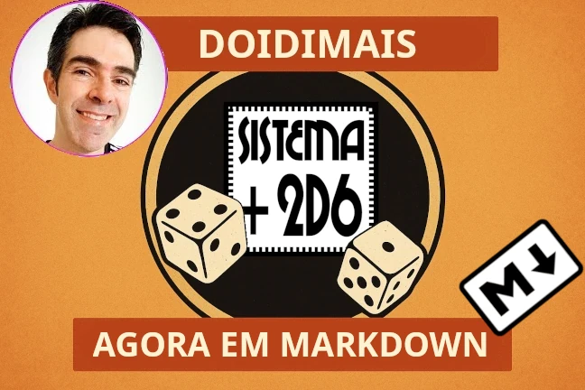

Sistema +2d6 em Markdown: agora o Tio Nitro fala plaintext
Se você é como eu — daqueles que preferem um .txt bem limpo a um
.docx cheio de tralha de formatação — então essa notícia vai te
agradar: acabei de converter o Sistema +2d6, do lendário Tio
Nitro, para Markdown.
Sim, Markdown. Aquele formato leve, legível, multiplataforma e perfeito pra quem quer abrir, editar, versionar e publicar regras de RPG sem ficar refém de softwares corporativos ou de interfaces cheias de distração. Agora o +2d6 virou um verdadeiro System Reference Document.
O que é o Sistema +2d6?
Pra quem não conhece, o +2d6 é um sistema de regras genéricas e customizáveis criado pelo Newton Rocha, mais conhecido como Tio Nitro — uma das figuras mais influentes da cena de RPG brasileira. Publicado originalmente em 2012 sob licença Creative Commons, ele foi pensado pra mestres e jogadores que curtem liberdade, improviso e pancadaria narrativa bem resolvida.
O que eu fiz?
Basicamente:
- Peguei o DOC original do Tio Nitro.
- Corrigi alguns errinhos tipográficos e gramaticais.
- Dei uma padronizada na formatação (ficou tinindo).
- E converti tudo pra Markdown estruturado, com metadados compatíveis com Pandoc.
O resultado é uma obra derivada, sim — mas respeitando a licença original e mantendo o conteúdo 99,9% fiel. Só limpei umas firulas em tabela pra caber melhor na página.
Por quê?
Porque texto plano é rei. Markdown é portável, versionável (Git manda um abraço), fácil de converter pra PDF, HTML, LaTeX, DOCX, EPUB e até pedra tabuinhas de argila em cuneiforme, se alguém programar isso. Ideal pra quem quer:
- Fazer suas próprias adaptações do +2d6.
- Publicar variantes em sites, blogs, repositórios ou zines.
- Levar o sistema pro mundo digital sem carregar bagagem inútil.
Se você curte RPG nacional, valoriza a simplicidade e quer um sistema pronto pra ser hackeado, o +2d6 em Markdown é pra você. Agora é só baixar, clonar ou forkar e partir pro jogo.
Publicado originalmente na GURPZine
em 23 de Julho de 2025
por Daniel “Nerun” Rodrigues
Licenças
CC BY 4.0
Sistema +2d6 em Markdown © Daniel “Nerun” Rodrigues <danieldiasr@gmail.com>
CC BY 3.0
Sistema +2d6 – Regras Customizáveis para RPGs – Versão 2.3
- Autor: Newton “Tio Nitro” Rocha
- Contato: prof.newtonrocha@gmail.com
- NitroDungeon RPG Blog: https://newtonrocha.wordpress.com
Baixe as fichas de personagem do +2d6 no meu blog de RPG!
O Sistema +2d6 é livre e aberto, podendo ser usado integralmente em qualquer projeto, jogo, RPG etc., para uso pessoal ou comercial. Ficarei muito feliz! ☺
Este trabalho está licenciado sob a Creative Commons Atribuição 3.0.
Você pode remixar, criar e comercializar a partir deste material, desde que atribua devidamente a autoria da obra original.
Por que eu mudei pra versão 4.0?
Legalmente falando, este material é considerado como uma obra derivada, justamente porque fiz alterações, apesar de serem mínimas e apenas de formatação. A CC BY 3.0 permite aos criadores de obras derivadas adotar versões mais recentes da mesma licença. Então optei por adotar a versão mais atual.
A versão 4.0 traz algumas melhorias importantes:
- Mais clara e internacionalizada — escrita de forma mais simples e válida em praticamente todos os países, sem depender de traduções legais específicas.
- Mais firme quanto aos direitos morais e de crédito — deixa bem claro como dar os créditos e o que não pode ser feito com o nome dos autores.
- Compatível com mais tipos de obras e sistemas jurídicos — incluindo bases de dados, o que pode interessar se alguém resolver transformar esse sistema em app ou planilha.
Na prática? Você pode copiar, remixar, modificar e publicar sua própria versão — desde que dê os devidos créditos. Continua simples assim.
Introdução
O que é RPG?
RPG é um jogo de interpretação de personagens. Uma mistura de teatro improvisado e jogo, o RPG tradicionalmente é jogado em grupo de duas ou mais pessoas, onde uma pessoa assume o papel do mestre do jogo, criando o cenário, criando e interpretando os personagens coadjuvantes e as dificuldades e desafios de uma história, enquanto os demais assumem o papel de jogadores, criando e interpretando os personagens principais da história que será criada coletivamente. O objetivo principal é se divertir vivendo aventuras imaginárias criadas coletivamente. Os temas são tão variados quanto os tipos de histórias que existem. Existem RPGs de fantasia, ficção científica, históricos, horror, humor, romance, anime, etc. apenas limitado pela imaginação do mestre e dos jogadores!
RPG é um jogo de criação coletiva de história, e assim, possui regras (também chamadas de “sistema”) que coordenam essa criação coletiva. O sistema +2d6 é um conjunto de regras para jogos de RPG.
A melhor maneira de aprender a jogar RPG é jogando com pessoas que já jogam RPG. Existem vários eventos de RPG por todo Brasil além de sites onde você pode jogar RPG via internet, e diversas comunidades e fóruns de RPG online onde você pode conhecer jogadores e mestres de RPG. Eu mesmo comecei a jogar depois de ser convidado por um mestre de RPG, em 1986!
Outra forma de aprender é arrumar uma aventura de RPG pronta ou criar a sua, aprender as regras da aventura, reunir um grupo de amigos e assumir o papel do mestre. Muita gente começou assim, e quando pela primeira vez assumi o papel de mestre de RPG, foi mestrando uma aventura pronta, o que me ajudou muito! A proposta do +2d6 é vir sempre acompanhando uma aventura curta, o que também ajudará a você que quer aprender a conhecer esse hobby fabuloso e doidimais!
O Sistema +2d6
O +2d6 foi criado com o objetivo de ser um sistema de fácil assimilação pelos jogadores, ser customizável pelo mestre para a aventura que ele quer mestrar, ser livre e gratuito para a criação de aventuras e material por qualquer pessoa, e possuir elementos constantes de diversos sistemas para facilitar a adaptação de material de outros sistemas de RPG.
O +2d6 foi influenciado pelos elementos comuns a diversos sistemas, como GURPS, Savage Worlds, d20, CODA, Tri-Stat, Daemon, 3D&T entre outros. Para facilitar o uso e tornar o sistema mais intuitivo tanto para mestres e jogadores veteranos quanto para novatos, os termos dos elementos do sistema foram escolhidos pela sua familiaridade. É um sistema simples e convencional, mas bem divertido e rápido, além de ser fácil utilizar e adaptar materiais, monstros, aventuras e cenários de outros sistemas.
O +2d6 é um sistema customizável e intuitivo para jogos de RPG de qualquer estilo. O sistema usa somente dados de 6 faces e foi criado para ser intuitivo, familiar e fácil de aprender, mestrar e adaptar material de outros sistemas. Existem dois tipos de testes para as tarefas ou ações do jogo:
Testes Opostos
Atributo+Perícia+2d6 de um personagem versus Atributo+Perícia+2d6* de outro personagem, o resultado maior vence o teste.
Testes Normais
Atributo+Perícia+2d6 de um personagem contra um número alvo, chamado de Classe de Desafio (CD), determinada pelo Mestre do Jogo. Se o resultado for igual ou maior que a Classe de Desafio (CD), o teste foi bem-sucedido. Os níveis de dificuldade (CD) variam de 2 (facílimo) até 30 (dificílimo). Testes de dificuldade comuns tem CDs que variam de 6 até 12. Como base, as Classes de Desafio (CD) são as seguintes:
| Testes | CD |
|---|---|
| Fáceis | 8 |
| Normais | 10 |
| Difíceis | 14 |
| Impossíveis | 15+ |
Acerto Crítico e Falha Crítica
Um resultado de “6” e “6” na rolagem de Atributo+Perícia+2d6 significa um Acerto Crítico. Um resultado de “1” e “1” na rolagem de Atributo+Perícia+2d6 causa uma Falha Crítica. O Mestre determina o que ocorreu em seguida, por exemplo, um Acerto Crítico pode causar o dobro do dano, enquanto uma falha crítica pode quebrar a arma utilizada ou causar dano em um aliado.
Criação de Personagens
Os personagens do +2d6 possuem ATRIBUTOS, PERÍCIAS, VANTAGENS e DESVANTAGENS. Além disso, também têm PONTOS DE VIDA (PVs) que é a energia vital do personagem e REDUÇÃO DE DANO (RD) a armadura do personagem. O personagem também tem BÔNUS DE ATRIBUTOS, pra atributos iguais ou acima de 3. Eles são anotados na área de Habilidades Especiais. Dependendo do cenário o personagem também pode ter PONTOS DE ENERGIA (PEs) gastos em habilidades sobrenaturais, mágicas ou superpoderes.
Os personagens são feitos por pontos, determinados pelo Mestre e dependendo do tipo de aventura. Os pontos são distribuídos nos Atributos, Perícias e usados para comprar Vantagens. Seguem algumas sugestões:
Aventuras Realistas ou de Horror – 10 a 15 pontos de Atributos, 10 pontos de Perícia, e Vantagens só se compram com pontos ganhos por Desvantagens no máximo de 5.
Aventuras Heroicas ou de Fantasia – 20 a 25 pontos de Atributos, 15 pontos de Perícia, 5 pontos de Vantagens e pode-se ter mais 5 pontos por Desvantagens.
Atributos
São as características básicas do personagem. O +2d6 usa de 6 atributos básicos e um sétimo, o atributo PODER (POD) para aventuras que envolvem poderes sobrenaturais.
Os valores dos atributos variam de 1 a 5 para humanos normais (abaixo de 1 são crianças e velhos), 6 a 10 para valores sobre-humanos e acima de 10 para valores épicos ou divinos. Os atributos podem ter valores negativos, indicando deficiências. O que os valores significam podem e devem ser customizados pelas aventuras. Seguem algumas sugestões.
O Mestre deve determinar os valores máximos dos atributos em suas campanhas.
Bônus Especial dos Níveis Sobre-humanos
Testes de atributos de nível sobre-humano, valores de 6 a 10, têm +6 de bônus se testados contra atributos de nível humano. Atributos de nível divino (acima de 10) têm +6 de bônus se testados contra atributos de nível sobre-humano e +12 de bônus se testados contra atributos de nível humano.
Força (FOR)
A força física do personagem. O Atributo Força é utilizado em todos os testes que envolvem o poder físico básico do personagem, regulando a capacidade de carga do personagem, alterando o dano causado por armas de mão. Esse atributo é prevalente em personagens com foco na ação e na força física, como guerreiros, artistas marciais, soldados, gladiadores, etc. Usa-se Força em testes de escalar, natação, luta corpo-a-corpo que envolve força, arrombar portas, etc.
| FOR | Capacidade | Dano |
|---|---|---|
| 1 | Levanta uma cadeira | 1d6-4 |
| 2 | uma mesa | 1d6-2 |
| 3 | 100 quilos | 1d6 |
| 4 | 200 quilos | 1d6+1 |
| 5 | 400 quilos | 1d6+2 |
| 6 | um carro | 3d6 |
| 7 | um caminhão | 4d6 |
| 8 | um avião | 5d6 |
| 9 | navio transatlântico | 6d6 |
| 10 | uma cidade | 7d6 |
Exemplos de Situações para Testes de FORÇA:
- Luta Livre. Ex: 2d6+FOR+Luta Livre do atacante vs. 2d6+FOR+Luta Livre do defensor.
- Levantar objetos pesados. Ex.: 2d6+FOR vs. Dificuldade.
- Queda de Braço. Ex. 2d6+FOR vs. 2d6+FOR do oponente.
Destreza (DES)
A velocidade, agilidade e perícia manual de um personagem. Mede a coordenação entre olhos e mãos, reflexos, equilíbrio e velocidade. Esse atributo controla a capacidade de acertar alvos à distância, os ataques com armas de mão que envolvem destreza, a perícia manual, e a velocidade de movimentação do personagem. Em combate, os testes de ataque corpo-a-corpo podem ser feitos tanto com DES quanto com FOR, dependendo do contexto e do tipo de arma e estilo de luta utilizado.
Bônus de Iniciativa para Destreza acima de 3
Destreza também dá um bônus nos testes de iniciativa (DES acima de 3) na primeira rodada do combate (usado para determinar a ordem das ações).
| DES | Capacidade | Bônus de Iniciativa |
|---|---|---|
| 1 | Sedentário | - |
| 2 | Faz exercícios regularmente | - |
| 3 | Atleta Amador | +1 |
| 4 | Atleta profissional | +2 |
| 5 | Campeão Olímpico | +3 |
| 6 | Rápido como um carro | +6 |
| 7 | … carro esportivo | +8 |
| 8 | … carro de corrida | +10 |
| 9 | … avião | +12 |
| 10 | … avião supersônico | +14 |
Exemplos de Situações para Testes de DESTREZA:
- Ataque com Armas Brancas. Ex: 2d6+DES+Armas Brancas vs. 2d6+DES+Defesa do defensor. Ou 2d6+DES+Armas Brancas do defensor, se ele se defender com uma arma branca.
- Ataque com Arco e Flecha. Ex.: 2d6+DES+Arco e Flecha vs. CD (Classe de Desafio determinada pelo Mestre) ou vs. 2d6+DES do defensor (com modificadores negativos), se o defensor puder reagir.
- Atirar com Pistola. Ex. 2d6+DES+Armas de Fogo (mais modificadores de precisão da arma utilizada) vs. 2d6+DES do alvo (com modificadores negativos altos) se o alvo puder reagir ou vs. CD determinada pelo Mestre.
- Abrir Fechaduras. Ex. 2d6+DES+Ladinagem vs. CD determinada pelo Mestre.
Constituição (CON)
A resistência física de um personagem, seu fôlego, sua capacidade de resistir a doenças e venenos. Também controla os PVs (Pontos de Vida) de um personagem. Normalmente, os PVs iniciais são iguais a 10+CON+FOR, mas isso pode variar de acordo com o estilo de aventura (aventuras com mais ação podem ser 20+CON+FOR, e aventuras mais realistas podem ser 10+CON+FOR). CONSTITUIÇÃO controla a energia física do personagem e é utilizado em testes de cansaço, esforço físico prolongado e para resistir a venenos ou doenças. Em cenários com magia, a CON também pode ser usada como base para calcular a energia mágica (ou Mana) do personagem. Personagens com CON igual ou acima de 3 ganham PVs iniciais extras.
| CON | Capacidade |
|---|---|
| 1 | Franzino, cansa rapidamente. |
| 2 | Corpo normal, sedentário, cansa com esforço físico moderado. |
| 3 | Corpo de Atleta Amador. +5 PVs extras, cansa após esforço físico forte. |
| 4 | Corpo de Atleta Profissional. +10 PVs extras, cansa apenas depois de esforço físico pesado. |
| 5 | Corpo de Atleta Campeão Olímpico. +15 PVs extras, cansa apenas depois de esforço físico pesadíssimo. |
| 6 | Corpo Sobrenatural resiste a tiros, incansável, +20 PVs Extras. |
| 7 | Recupera rapidamente de cortes profundos, não desmaia nunca, fica semanas sem comer, +30 PVs extras. |
| 8 | Resiste a golpes mortais, recupera de tiros no coração, difícil de morrer, +40 PVs extras. |
| 9 | Quase invulnerável, não sente queimaduras, quase não sente dor nenhuma; +50 PVs extras. |
| 10 | Invulnerável, não cansa nunca, não precisa dormir nunca, quase não precisa de nutrição. +60 PVs extras. |
Exemplos de Situações de Testes de CONSTITUIÇÃO:
- Cansaço Físico. Ex: 2d6+CON vs. uma CD determinada pelo Mestre para ver se o personagem está cansado.
- Veneno. Ex: 2d6+CON vs. 2d6+Força do Veneno ou uma CD determinada pelo Mestre para ver se o personagem está envenenado.
Inteligência (INT)
A inteligência é a capacidade de raciocínio lógico, a capacidade de aprendizado e a memória de um personagem. O atributo Inteligência é usado em todos os testes que envolvem o conhecimento intelectual acumulado pelo personagem. Testes que envolvem conhecimentos gerais e acadêmicos, solução de enigmas, decifração de códigos, estratégias militares, aprendizado e conhecimento de novos idiomas, capacidade de aprender novas magias ou novos conhecimentos, pesquisas acadêmicas, uso de computadores, etc. Também pode ser usado para invocar magias.
| INT | Capacidade |
|---|---|
| 1 | Inteligência normal. |
| 2 | Inteligência acima da média. |
| 3 | Inteligência bem acima da média. |
| 4 | Gênio, QI alto. |
| 5 | Super-Gênio, QI muito alto. |
| 6 | Inteligência Sobrenatural, Memória Fotográfica. |
| 7 | Super Inteligência |
| 8 | Computador Humano. |
| 9 | Super Computador Humano |
| 10 | Mega Computador Humano |
Exemplos de Situações de Testes de INTELIGÊNCIA:
- Hackear Computadores. Ex: 2d6+INT+Computação vs. uma CD determinada pelo Mestre.
- Pesquisa em Biblioteca. Ex: 2d6+INT+Investigação vs. uma CD determinada pelo Mestre
- Duelo entre dois Hackers (um tentando invadir o computador do outro). Ex: 2d6+INT+Computação vs. 2d6+INT+Computação do oponente.
Sabedoria (SAB)
A percepção, intuição, sensibilidade e conhecimento intuitivo de um personagem. Também representa a força de vontade. Usada em testes que envolvem ouvir, perceber, ver, intuir perigo, perceber motivação, visualizar um alvo, perceber energias místicas ou presenças sobrenaturais. Também se usa Sabedoria em combates para ver se alguém está surpreso (nesse caso, quem não passar em um teste de Sabedoria (2d6+SAB vs. CD determinada pelo Mestre ou vs. 2d6+SAB+Furtividade de quem está criando a emboscada) ficará sem ação na rodada. Pode ser usado em conjunto com a perícia Vontade (ver lista de perícias) para aqueles com a força de vontade treinada para resistir medo, estresse, poderes mentais e hipnóticos.
| SAB | Capacidade |
|---|---|
| 1 | Percepção, força de vontade e intuição normais. |
| 2 | Percepção, força de vontade e intuição acima da média. |
| 3 | Percepção, força de vontade e intuição bem acima da média. +1 de bônus em testes de força de vontade e percepção. |
| 4 | Percepção, força de vontade e Intuição altíssimas. +2 de bônus em testes de força de vontade e percepção. |
| 5 | Percepção e Intuição de um ninja. +3 de bônus em testes de força de vontade e percepção. |
| 6 | Percepção, força de vontade e Intuição sobrenaturais. +6 de bônus em testes de força de vontade e percepção. |
| 7 | Super Percepção, força de vontade e Intuição, atinge áreas do tamanho de um bairro. +8 de bônus em testes de força de vontade e percepção. |
| 8 | Super Percepção, força de vontade e Intuição envolvem cidades. +10 de bônus em testes de força de vontade e percepção. |
| 9 | Super Percepção, força de vontade e Intuição envolvem estados. +12 de bônus em testes de força de vontade e percepção. |
| 10 | Super Percepção e Intuição envolvem países. +14 de bônus em testes de força de vontade e percepção. |
Exemplos de Situações de Testes de SABEDORIA:
- Sentir Perigo. Ex: 2d6+SAB vs. uma CD determinada pelo Mestre.
- Sentir Motivação, ou Perceber Mentiras. Ex: 2d6+SAB vs. 2d6+INT do alvo.
- Atacar um alvo muito distante. Ex. Um teste bem sucedido de 2d6+SAB vs.CD determinada pelo mestre antes de fazer o ataque com a arma à distância (2d6+DES+Perícia da Arma vs. CD determinada pelo Mestre).
- Resistir ao Medo: Ex: 2d6+SAB+perícia Vontade vs. CD determinada pelo Mestre.
Carisma (CAR)
O carisma social de um personagem, capacidade de influenciar pessoas, convencer, seduzir, etc. CAR é usado em testes que envolvem interação social, disputas de discursos, demonstrações artísticas, etc.
| CAR | Capacidade |
|---|---|
| 1 | Carisma normal, não chama atenção. |
| 2 | Simpático, chama um pouco a atenção, carisma um pouco acima da média. |
| 3 | Carisma bem acima da média, chama a atenção, dá +1 em testes de sedução, diplomacia e manipulação. |
| 4 | Sedutor, líder, carismático, afeta um grupo de pessoas considerável. +2 em testes de sedução, diplomacia e manipulação. |
| 5 | Muito sedutor, muito carismático, afeta um grupo grande de pessoas, político de liderar multidões. +3 em testes de sedução, diplomacia e manipulação. |
| 6 | Carisma sobrenatural, hipnotiza só com o olhar. +6 em testes de sedução, diplomacia e manipulação. |
| 7 | Super Carisma, hipnotiza grandes grupos de pessoas. +8 em testes de sedução, diplomacia e manipulação. |
| 8 | Super Carisma afetando centenas de pessoas ao mesmo tempo, manipulação total. +10 em testes de sedução, diplomacia e manipulação. |
| 9 | Super Carisma afetando milhares de pessoas ao mesmo tempo, manipulação total. +12 em testes de sedução, diplomacia e manipulação. |
| 10 | Super Carisma afetando milhões de pessoas ao mesmo tempo, manipulação total. +14 em testes de sedução, diplomacia e manipulação. |
Exemplos de Situações de Testes de CARISMA:
- Seduzir. Ex: 2d6+CAR vs. 2d6+INT do alvo.
- Diplomacia. Ex: 2d6+CAR vs. 2d6+INT do alvo ou vs. CD determinada pelo Mestre.
- Convencimento: Ex: 2d6+CAR vs. 2d6+INT do alvo ou vs. CD determinada pelo Mestre.
Poder (POD)
O poder sobrenatural de um personagem, o nível que pode afetar a realidade com o seu poder. Apenas personagens com poderes mágicos, sobrenaturais, cibernéticos, etc. possuem o atributo Poder.
| POD | Capacidade |
|---|---|
| 1 | Poder pequeno, de pouco efeito. |
| 2 | Poder de efeito normal, limitado. |
| 3 | Poder de efeito grande, afeta mais de um alvo, super-herói mediano. |
| 4 | Poder de efeito considerável, super-herói local acima da média. |
| 5 | Poder de efeito enorme, super-herói local de elite. |
| 6 | Super-herói de nível nacional. |
| 7 | Super-herói de nível global. |
| 8 | Super-herói de nível global e de elite. |
| 9 | Super-herói de nível cósmico. |
| 10 | Super-herói de nível cósmico e de elite. |
Exemplos de Situações de Testes de PODER:
- Controlar Mentes. Ex: 2d6+POD+Perícia Controlar Mentes vs. 2d6+POD do alvo.
- Raio de Fogo. Ex: 2d6+POD+Perícia Raio de Fogo vs. 2d6+DES do alvo ou vs. CD determinada pelo Mestre.
Perícias
São determinadas pelo tipo de aventura. Em média, um personagem possui cerca de 5 a 10 perícias. As perícias têm valores de 1 a 5 e representam tanto as especialidades quanto os poderes especiais dos personagens. As perícias podem ser genéricas ou específicas, determinadas pelo Mestre do Jogo ou escolhidas/criadas pelos jogadores.
Exemplo de perícias: Investigação, Engenharia, Ocultismo, Medicina, etc.
Valores das perícias: (1) Iniciante, (2) Profissional, (3) Experiente, (4) Perito, (5) Expert.
Lista de Perícias
As perícias listadas abaixo são apenas sugestões para os mestres. Cada mestre deve criar uma lista específica para o tipo de aventura que está criando. A sugestão é criar uma lista de 15 a 20 perícias e distribuir entre os personagens dos jogadores, criando a aventura em cima das perícias escolhidas. Ao lado do nome da perícia está o Atributo Básico ao qual ela deve ser somada em um teste normal ou oposto.
Poderes sobrenaturais (que são perícias também) sempre envolvem o atributo Poder, e estão descritos na parte de Vantagens.
Perícias Físicas (DES, FOR ou CON)
Acrobacia (DES): habilidade de dar saltos mortais, estrelas, saltos acrobáticos, etc. Pode ser usada como defesa em combate.
Armas Brancas (DES ou FOR): perícia genérica que envolve todos os tipos de armas brancas. Dependendo do tipo de aventura, pode-se criar uma perícia específica para cada tipo de arma branca (Espadas, Machados, Adagas, Chicotes, etc.).
Armas de Energia (DES): perícia genérica que envolve todos os tipos de armas de energia (comuns em cenários e aventuras futuristas). Dependendo do tipo de aventura, pode-se criar uma perícia específica para cada tipo de arma de energia (Rifles Laser, Pistolas Laser, Sabres de Luz, etc.).
Armas de Fogo (DES): perícia genérica que envolve todos os tipos de armas de fogo. Dependendo do tipo de aventura, pode-se criar uma perícia específica para cada tipo de arma de fogo (Rifles, Pistolas, Armas Automáticas, Bazuca, etc.).
Arte da Fuga (DES): habilidade para escapar de amarras, correntes ou algemas, rastejar por espaços apertados, etc.
Atletismo (DES ou FOR): perícia genérica que abarca todos os tipos de atividade física de grande esforço, correr, nadar, arremessar peso, saltar, etc.
Artes Marciais (DES): perícia genérica que envolve todos os tipos de artes marciais. Dependendo do tipo de aventura, pode-se criar uma perícia específica para cada tipo de arte marcial (Judô, Karatê, Jiu-jitsu, etc.).
Arremessar (DES): habilidade de lançar objetos como lanças, maças, machados, etc.
Bater Carteiras/Punga (DES): habilidade para roubar sem ser percebido, requer grande destreza com as mãos.
Briga (FOR ou DES): luta de rua, sem técnica e brutal.
Dirigir (DES): perícia genérica, condução de veículos automotores.
Cavalgar (DES): andar a cavalo ou outro tipo de animal.
Controle da Respiração (CON): habilidade de prender ou controlar a respiração, emoções, reduzir o dano de choques psíquicos ou perda de sanidade.
Correr (DES): treinamento específico de corrida, perde menos PE (pontos de energia e corre mais rápido).
Equilíbrio (DES): ser capaz de se equilibrar em superfícies estreitas, andar em cabo de aço, etc.
Escalar (FOR ou DES): subir superfícies íngremes à uma velocidade igual ao Deslocamento/4.
Esconder-se (DES ou INT): técnica de camuflar, esconder da vista do oponente, se ocultar nas sombras, passar despercebido.
Estrangular (FOR): técnica de usar a força para matar alguém.
Ferreiro (DES): habilidade de criar e reparar armas, escudos e armaduras de metal.
Fugir (DES): habilidade de saber escapar correndo de um perigo.
Furtividade (DES): aproximar-se sem ser notado por um inimigo, perseguir sem ser visto, andar silenciosamente.
Levantamento de Peso (FOR): treinamento específico de atleta para levantar pesos.
Luta Livre (FOR ou DES): arte marcial baseada em agarrões e submissões do oponente.
Natação (FOR ou DES): saber nadar.
Pilotar (DES): perícia genérica, habilidade de pilotar veículos aéreos e aquáticos, pode-se criar perícias específicas para cada tipo de veículo (submarino, navio, lancha, avião comercial, etc.).
Saltar (FOR ou DES): técnica para dar saltos mesmo em condições adversas.
Skate (DES): habilidade de se locomover usando o skate, capacidade de realizar proezas no skate.
Tolerância (CON): capacidade de resistir à dor, fadiga, fome e sede.
Resistência a Venenos (CON): habilidade de resistir os efeitos de venenos.
Perícias Mentais (INT OU SAB)
Administração (INT): conhecimento de gerência, liderança, hierarquia corporativa, etc.
Alquimia (INT): conhecimento alquímico, preparo de poções mágicas, talismãs, etc.
Antropologia (INT): estudo do homem e da cultura humana, estudo de culturas primitivas e contemporâneas.
Arrombamento (INT): saber abrir fechaduras, abrir portas, cofres, etc.
Artilharia (INT): conhecimento de artilharia militar, artilharia antiaérea, etc.
Biologia (INT): conhecimento acadêmico sobre os seres vivos.
Camuflagem (INT): saber como se camuflar, esconder, criar disfarces, etc.
Cartografia (INT): habilidade de criar mapas, de mapear locais desconhecidos, etc.
Ciência Forense (INT): conhecimento técnico e acadêmico sobre causas dos crimes, causas de mortes, autópsias, etc.
Ciências Proibidas/Ciências Ocultas (INT): ocultismo, arcanismo e outras ciências não oficiais, que envolvem temas tabus e proibidos como magia, demonologia, estudo dos espíritos, etc.
Comércio (INT): perícia genérica que envolve barganha, negociação, reconhecer o melhor preço, etc.
Computação (INT): conhecimento acadêmico ou técnico sobre computadores, análise de sistemas, programação, reparo.
Conhecimento (INT): perícia genérica, pode ser usada junto com alguma área de conhecimento, para RPGs que não sejam muito investigativos, como Conhecimento Ciências Humanas, Técnico, Eletrônico, etc.
Coletar Evidência (INT ou SAB): técnica de buscar pistas em cenas de crimes.
Contabilidade (INT): conhecimento de balanço de pagamentos, finanças de empresas, imposto de renda, etc.
Criptografia (INT): conhecimento de como quebrar ou criar códigos secretos.
Criminologia (INT): estudo acadêmico sobre crimes, saber criar um perfil de um assassino, entender as motivações de um crime, etc.
Cultura Popular (INT): conhecimento dos rumores, boatos, acontecimentos do mundo do entretenimento, cultura de massa, novelas, celebridades, etc.
Direito (INT): conhecimento da legislação, conhecimento dos procedimentos legais, de como se defender e atacar em um tribunal, reconhecer ilegalidades.
Disfarces (INT ou CAR): habilidade de criar disfarces, de se fazer passar por outra pessoa.
Economia (INT): conhecimentos de economia, finanças nacionais, problemas econômicos.
Eletrônica (INT): conhecimento de sistemas eletrônicos, criação, projeto, hacking, etc.
Ensino (INT): conhecimento de didática, habilidade de dar aulas, de passar informações.
Espionagem (INT): perícia genérica, conjunto de habilidades relacionadas com espiões, como instalação de câmeras secretas, perseguir sem ser visto, desarmar esquemas de segurança, etc.
Escrever (INT): habilidade de escrever profissionalmente.
Estratégia Militar (INT): conhecimento de táticas militares, capaz de reconhecer táticas militares do inimigo, descobrir pontos fracos, estabelecer táticas de combate eficazes.
Explosivos (INT): armar e desarmar explosivos, criar bombas, etc.
Exorcismo (INT ou CAR): sabe realizar rituais de exorcismo, conhece a ritualística, etc.
Farmácia (INT): conhecimento sobre remédios, drogas, medicamentos.
Falsificação (INT): habilidade de falsificar documentos, objetos de arte, dinheiro, etc.
Finanças (INT): perícia genérica que envolve economia, contabilidade, e áreas que envolvem dinheiro como investimentos, taxas, etc.
Fotografia (INT): habilidade técnica de bater fotos de nível profissional, analisar fotos, ampliar e trabalhar com imagens.
Geologia (INT): estudo do solo, eras geológicas, etc.
Hacking (INT): habilidade para invadir sistemas, criar vírus de computador, tomar controle de redes de telecomunicações, etc.
Hipnose (INT): habilidade para afetar a mente de uma pessoa e torná-la mais fácil de ser manipulada.
História (INT): estudo da história da humanidade, conhecimento de fatos históricos locais ou globais.
Investigação (INT ou SAB): perícia genérica, habilidade técnica de reunir pistas, reunir evidências, deduzir, etc.
Literatura (INT): conhecimento acadêmico de obras literárias, capacidade de interpretação profissional de obras de arte, conhecimento de história da literatura.
Matemática (INT): estudo da ciência da matemática.
Mecânica (INT): habilidade de criar e reparar equipamentos mecânicos, consertar veículos.
Medicina (INT): conhecimento das artes médicas, realizar operações, tratar ferimentos, etc.
Mitos de Cthulhu (INT): conhecimento dos inomináveis horrores cósmicos.
Naturalista (INT): conhecimento acadêmico sobre a vida selvagem.
Navegação (INT): sabe como conduzir uma embarcação, como se orientar em alto mar, etc.
Ofícios (INT): perícia genérica para representar algum tipo de habilidade técnica como artesanato, escultura, ferraria, criação de animais, agricultura, joalheria, etc.
Operar Submarino/Navio/Nave Espacial (INT): perícias específicas sobre como cuidar, operar, pilotar, o veículo indicado.
Operar Power-Armor (INT): perícias específicas sobre como cuidar, operar, pilotar uma Power-Armor.
Paleontologia (INT): estudo das formas de vida existentes no período pré-histórico.
Procurar (SAB): habilidade de vasculhar com atenção, notar pequenas diferenças, muito útil para investigadores.
Primeiros Socorros (INT ou SAB): treinamento técnico de como proceder para estancar ferimentos, fazer os primeiros cuidados com os feridos, criar talas de emergência, etc.
Psicologia (INT): conhecimento acadêmico de psicologia, e saber realizar terapias, hipnotizar, analisar e entender as motivações ocultas das ações dos indivíduos.
Psiquiatria (INT): conhecimento acadêmico e técnico de psiquiatria, das doenças, problemas cerebrais, medicamentos, etc.
Química (INT): conhecimento de reações químicas, produção de elementos químicos, etc.
Rastreio (INT): saber rastrear, seguir rastros, perseguir uma presa ou pessoa.
Religião (INT ou SAB): conhecimento teológico, de história das religiões, da ritualística, etc.
Rituais Ocultistas (INT ou POD): conhecimento de como realizar rituais mágicos.
Rituais Religiosos (INT): conhecimento de como realizar rituais religiosos.
Senso de Direção (SAB): habilidade para distinguir as direções através do instinto.
Sobrevivência (INT): habilidade de sobreviver em lugares selvagens, encontrar abrigo, caçar, conseguir alimento, reconhecer plantas venenosas.
Sobrevivência Urbana (INT): capacidade de sobreviver em ambiente urbano, saber fontes de comida gratuita, andar pelo submundo, conseguir abrigo, conhecer os perigos da vida urbana dos sem-casa.
Sociologia (INT): estudo das sociedades, de sua organização, estrutura, grupos sociais, ideologias, etc.
Venenos (INT): saber criar, usar, identificar e neutralizar venenos.
Veterinária (INT): tratar ferimentos e doenças de animais, conhecimento de biologia animal.
Vontade (SAB): o personagem tem a Força de Vontade treinada, capaz de resistir ao medo, à hipnose, poderes mentais, etc.
Perícias Sociais (CAR)
Artista (CAR): atuação em teatro, cinema, filmes, capacidade de atuar, pode ser para atores, dançarinos, artistas de circo, etc.
Convencimento (CAR): convencer, mudar a opinião de outra pessoa.
Contatos (CAR): aliados, amigos e informantes que o personagem pode acessar durante uma aventura, o mestre pede o teste de contatos com modificadores dependendo da familiaridade do personagem com o local onde busca contatos.
Debate (CAR): habilidade de debater e vencer debates, duelos verbais.
Diplomacia (CAR): realizar acordos, convencer pessoas, oferecer propostas e ter reações positivas.
Empatia (CAR): habilidade de sentir e perceber o que os outros estão sentindo.
Lidar com Animais (CAR): habilidade de domar, acalmar e lidar com animais.
Manipulação (CAR): enganar, manipular, mentir de maneira convincente.
Manha (INT ou CAR): Conhecimento das ruas, saber criar contatos, conseguir informações, conhecer o submundo, saber das gírias, dos grupos criminosos, etc.
Mentir (CAR): habilidade de mentir de maneira convincente.
Intimidação (CAR): habilidade para intimidar outras pessoas, causar medo e forçar sua autoridade nos outros.
Falar em Público (CAR): habilidade de lidar com uma plateia e impressionar com suas palavras, sem sentir timidez.
Sentir Motivação (CAR): saber se uma pessoa está mentindo, entender os sentimentos de uma pessoa.
Sedução (CAR): habilidade para seduzir, manipular emocionalmente, fingir sentimentos amorosos de maneira convincente, charme.
Listas de perícias pré-selecionadas
Para jogos com foco maior na ação do que na investigação, recomendo usar Perícias Genéricas, uma lista curta de no máximo 15 perícias que fazem tudo que for necessário na aventura. Você também pode (e deve) inventar perícias de acordo com o cenário ou a aventura.
Sugestão de Perícias para Aventuras de Fantasia:
- Acrobacia (DES)
- Arcanismo (INT)
- Armas Corpo-a-corpo (DES/FOR)
- Armas de Ataque à Distância (DES)
- Atletismo (FOR)
- Cura (INT)
- Diplomacia (CAR)
- Furtividade (DES)
- História (INT)
- Intimidação (CAR)
- Intuição (SAB)
- Ladinagem (DES/INT)
- Procurar (SAB)
- Religião (INT)
- Sobrevivência (INT/SAB)
- Vontade (SAB)
Sugestão de Perícias para Aventuras de Horror:
- Armas Brancas (DES/FOR)
- Armas de Fogo (DES)
- Atletismo (FOR/DES)
- Ciências (INT)
- Crime (DES/INT)
- Diplomacia (CAR)
- Dirigir (DES)
- Erudição (INT)
- Furtividade (DES)
- História (INT)
- Investigação (INT)
- Ocultismo (INT)
- Primeiros Socorros (INT)
- Procurar (SAB)
- Usar computadores (INT)
- Vontade (SAB)
Vantagens e Desvantagens
São determinadas pelo tipo de aventura. Vantagens são compradas com pontos de personagem e desvantagens dão pontos extras para comprar Vantagens. É importante que todos os que forem jogar estejam de acordo com as vantagens e desvantagens escolhidas. Quando uma vantagem for um Poder, ela também é uma perícia, de valor igual ao seu custo. Se a vantagem também for uma perícia, ela vem com o atributo relacionado e que será utilizado nos testes.
Exemplo de Vantagens:
Poder de Voo (POD)
- 1 pt - Flutuar a até 10 metros do chão, velocidade de caminhada.
- 2 pts - Flutua a até 50 metros do chão, velocidade de caminhada.
- 3 pts - Voo a até 100 metros do chão, velocidade de até 60 km/h
- 4 pts - Voo a até 1 km do chão, velocidade de até 200 km/h
- 5 pts - Voo a até 10 km do chão, velocidade de até 500 km/h.
Assim, Poder de Voo de custo 3 também vira uma perícia, a perícia Voo 3; Em um teste entre dois personagens que voam, será POD+Perícia Voo 3+2d6 de um personagem versus POD+Perícia Voo+2d6 do outro personagem.
Exemplo de Desvantagens:
Fúria Incontrolável
- +3 pts - Todas as vezes que o personagem estiver em uma situação de estresse (um combate, com medo, etc.), fazer um teste de INT em dificuldade determinada pelo Mestre, para não entrar em fúria incontrolável e atacar seus aliados.
Testes
Classes de Desafio dos Testes Normais
O Mestre deve determinar pelo contexto da cena qual é a dificuldade do teste. Como base, as Classes de Desafio (CD) são as seguintes:
- Testes Fáceis – Classe de Desafio 8
- Testes Normais - Classe de Desafio de 10
- Testes Difíceis - Classe de Desafio de 14
- Testes Impossíveis - Classe de Desafio acima de 14
Testes normais são usados em todos os momentos em que o Mestre precisa testar os limites das habilidades dos Personagens dos Jogadores (PdJs) em relação a uma tarefa que não envolve um oponente. Ex: Para Escalar um muro (2d6+FOR+Perícia Escalar vs. CD 12), rola-se 2d6 soma a Força e a Perícia Escalar e o resultado igual ou maior que 12.
Para testes de níveis sobre-humanos (valores de atributos 6 a 10), basta acrescentar +10 na Classe de Desafio (fácil 18, normal 20, difícil 24 ou mais). Lembre-se que se um personagem tem atributo sobre humano (acima de 6) e o teste for de nível humano, ele tem +10 de bônus extra no seu teste. Ex.: Um personagem de FOR 6 para fazer um teste de nível humano, CD 10 para levantar uma porta de ferro, tem +10 de bônus extra (por causa do atributo sobre-humano, e assim, tem um sucesso automático para levantar a porta de ferro).
Modificadores de Ocasião
O mestre deve determinar os modificadores de ocasião de um teste caso haja necessidade. Em muitas cenas, o ambiente, as condições do lugar, o uso de equipamentos apropriados, o uso de aliados, etc. dão vantagens ou desvantagens ocasionais para os personagens. Os modificadores variam de -6 (desvantagem ocasional) até +6 (vantagem ocasional). Seguem algumas sugestões:
- Desvantagem Grande: -6 no teste.
- Desvantagem Média: -4 no teste.
- Desvantagem Leve: -2 no teste.
- Vantagem Grande: +6 no teste.
- Vantagem Média:+4 no teste.
- Vantagem Leve: +2 no teste.
Combate
O combate é feito por turnos, A ordem das ações é determinada pela iniciativa.
1. Iniciativa
Todos os personagens rolam DES+2d6, a ordem das ações será dos personagens com maiores resultados até os personagens de menores resultados. Valores iguais são ações simultâneas. Personagens que possuem DES 3 ou mais somam seus Bônus de Iniciativa nesse teste (DES 3 - bônus de iniciativa +1, DES 4 – bônus de iniciativa +2, DES 5 – bônus de iniciativa +3,etc.).
2. Ações
Cada personagem tem direito a uma ação (o que dá para ser feito em 3 segundos). Como o jogo é narrativo, deve-se usar o bom senso. O Mestre tem a palavra final, sempre. Rola-se o teste da ação (que pode ser oposto ou contra uma dificuldade determinada pelo mestre) e rola-se o dano se houver. A defesa é ativa ou passiva. Se um personagem puder se defender, rola o teste oposto do ataque contra o teste de defesa (normalmente DES+perícia específica), quem tirar maior acerta. Se o alvo não puder se esquivar, o Mestre determina a dificuldade de acertar, e o atacante faz um teste normal contra uma dificuldade fixa.
3. Fim do Turno
O turno encerra depois que todos tiverem agido. O próximo turno começa seguindo a ordem da iniciativa. O mestre determina o final da cena de combate.
Dano
O dano é rolado depois dos ataques. O dano varia de acordo com o tipo de arma ou poder e pode ser customizado. O dano varia de 1d6-5 a até 10d6 (ou mais). O dano pode ser Letal ou Não-Letal, determinado pelo Mestre. Os efeitos do dano também são determinados pelo mestre (corte, perfuração, explosão, ácido, etc.). Exemplos de dano:
Soco 1d6 (dano de FOR 1), Chute 1d6+1 (Dano de FOR 1 mais 1 pelo chute), Tiro 1d6+3, Escopeta 2d6+4, Serra Elétrica 3d6+3, Dinamite 4d6+4, Bazuca 5d6+6, etc.
Dano Localizado
O atacante pode querer desferir um dano em um local específico, causando uma condição junto com o danos dos PVs. Nesse caso o atacante declara qual área do oponente ou alvo ele quer acertar e o mestre define a penalidade (modificador de ocasião) do atacante, dependendo da dificuldade do local específico do ataque. Algumas sugestões: Olho, Orelha, Dedo da Mão (penalidade de -6), Cabeça, Pescoço, Tornozelo (penalidade de -4), Ombros, Pernas, Braços (penalidade de -2). Caso o ataque seja bem sucedido, o mestre define narrativamente qual foi a consequência do ataque para o alvo (o alvo está manco, cego, sangrando, etc.).
Redução de Dano
Armaduras eliminam parte do dano, ou seja tem Redução de Dano (RD). Assim, alguém com um Colete de Balas (RD 3), elimina 3 pontos de dano de um Tiro (dano 1d6+3). O Mestre determina quais armaduras funcionam para determinados tipos de dano de acordo com o contexto da aventura.
Exemplos de Redução de Dano:
Colete a prova de balas - RD 3, Poder de Campo de Força - RD 4, Armadura Medieval Completa de Aço - RD 4 (contra golpes de espada).
Morte
Se um personagem for reduzido a 0 ou menos PVs por dano, ele cai inconsciente e passa a estar morrendo. No entanto, se o dano for suficiente para ultrapassar o limite de PVs negativos que ele pode suportar, ele morre instantaneamente.
Esse limite varia conforme o estilo do cenário. Abaixo estão duas sugestões:
Cenários Realistas: o personagem morre se seus PVs negativos forem iguais ou inferiores a - (CON + FOR).
Cenários Heroicos: o personagem morre se seus PVs negativos forem iguais ou inferiores a - (CON + FOR + 10).
Testes de Morte
Quando um personagem ficar com PVs negativos, a cada rodada ele deve rolar 2d6. Caso o resultado seja igual ou maior que 6 o personagem teve sucesso no teste de morte e continua vivo, porém, continua a fazer o teste nas rodadas seguintes. Caso o resultado seja menor que 6, o jogador teve um fracasso no teste de morte, e continua a fazer o teste nas rodadas seguintes. O personagem morre totalmente após três fracassos nos testes de morte. Caso o jogador tire 12 na rolagem do 2d6, o personagem se estabiliza. Caso outro personagem seja bem sucedido em um teste de cura, primeiros socorros, medicina, etc. o personagem com os PVs negativos se estabiliza e não é necessário mais testes de morte.
Regras Opcionais
O +2D6 foi feito para ser totalmente customizável de acordo com o tipo de história jogada. Seguem abaixo algumas regras alternativas de Pontos de Sanidade, para jogos de horror no estilo de Rastro de Cthulhu.
Pontos de Sanidade
Pontos de Sanidade serão iguais a INT+SAB+10 (Campanhas Realistas) ou INT+SAB+20 (Campanhas Heroicas) mais o maior valor de uma Perícia que envolve Conhecimento Acadêmico. Todas as vezes que o personagem enfrentar uma situação de horror, ele faz um teste de SAB ou INT (o que for maior). Se não passar, perderá de 1 a 6 pontos de sanidade, dependendo do grau do horror experienciado. Ao chegar a um número igual ou abaixo de metade dos pontos totais de sanidade, o personagem sofre uma insanidade temporária, que dura uma cena do jogo. Nesse ponto o personagem terá +2 de bônus nos próximos testes de Sanidade. Se o personagem chegar a até um quarto dos pontos totais de Sanidade, o personagem ganha uma insanidade permanente e terá +4 pontos de bônus nos próximos testes de Sanidade. Se os pontos de sanidade chegarem a 0, o personagem passa para o lado dos antagonistas e vira um louco de pedra. O jogador pode perder o personagem ou jogar do lado dos inimigos!
Pontos de Mana ou de Energia
Pontos que podem ser gastos ao usar magias ou poderes. Serão iguais à POD+10, com o custo de usar os poderes variando de 1 Ponto de Energia/Mana a 5 Pontos de Energia/Mana (ou mais para magias mais poderosas).
Magia Flexível
Para facilitar, pode-se usar Magia como uma perícia bem flexível, usando o teste de POD+Perícia Magia (Especialização) +2d6 contra uma dificuldade determinada pelo mestre para criar efeitos mágicos. O dano da magia pode ser 1d6+POD por nível de perícia. A magia pode ser limitada por esferas genéricas de magia, como Fogo, Água, Luz, Trevas, etc. e combinar as perícias para efeitos diversos, determinados pelo Mestre de acordo com o tipo de cenário e de aventura.
Evolução de Personagem
Depois de cada 4 horas de jogo ou uma sessão, os jogadores ganham 1 Ponto de Personagem, que pode ser gasto em Perícias ou Vantagens (nunca em Atributos, a não ser que o cenário ou o mestre permita). Ao final de uma missão perigosa os jogadores ganham +1 ponto de personagem extra. No final de uma aventura ou fase de uma campanha, os jogadores ganham +2 pontos de personagem extras. As perícias custam 1 ponto de personagem cada novo nível e as vantagens custam 2 pontos cada novo nível.
Pontos Narrativos
Todas as vezes que um jogador tiver uma grande ideia, ou representar muito bem uma cena, ou contribuir muito para a diversão de todos no jogo, o Mestre pode dar ao jogador um Ponto Narrativo. Apenas um Ponto Narrativo por sessão pode ser dado a um jogador, e apenas um Ponto Narrativo pode ser usado em uma cena do jogo. O Ponto Narrativo dá a vantagem de rolar um dado de seis faces extra em um teste do personagem ou permite que o jogador altere algum detalhe de uma cena do jogo (de acordo com o bom senso e a autorização do Mestre em relação à alteração). A alteração pode ser o surgimento de um aliado, um item que ele descobriu e que pode ajudar o grupo, etc.
Pontos de Ação
No começo de uma aventura ou etapa de uma campanha, o mestre dá aos jogadores um número de 1 a 6 em Pontos de Ação (1 para aventuras mais realistas e até 6 para aventuras mais heroicas). Os jogadores podem gastar no máximo 1 ponto de ação em um combate. O ponto de ação dá uma ação extra ou 2d6 extras de bônus em uma ação.
Usando os Dados de Dungeons & Dragons
Ao invés do +2d6 você pode usar todos os dados do D&D (d4, d6, d8, d12, d10, d20) para jogar com um clima de fantasia medieval. Nesse caso o +2d6 passa a se chamar para se chamar Sistema +1d20, pois todos os testes serão feitos com +1d20, ao invés de +1d6. Todas as regras se aplicam, apenas com algumas adaptações.
Classes de Desafio dos Testes usando +1d20
- Testes fáceis: Classe de Desafio 12
- Testes Normais: Classe de Desafio 16
- Testes Difíceis: Classe de Desafio 18
- Testes Impossíveis: Classe de Desafio 20 ou mais.
Adaptando o Dano do +2d6 aos dados do D&D
O dano é facilmente adaptável. Some o dano da arma e substitua pelo número de dados que mais se aproximar. Exemplo: Um arco composto dá 1d6+4 de dano no Sistema +2d6, como 1d6+4 dá no máximo 10, o dano usando dados de D&D será 1d8+2. Você pode fazer o mesmo com o dano de FOR. Um personagem de Atributo 5 de força dá dano de 1d6+4, o que dá no máximo 10 de dano. Você pode substituir o dano de 1d6+4 por 1d10, por exemplo.
Testes de Morte são feitos da mesma forma porém, o jogador tem que tirar 10 ou mais rolando o d20 para ter sucesso no teste de morte e seu personagem continuar vivo (porém ainda não estabilizado). Um resultado abaixo de 10 representa um fracasso nos testes de morte (feitos à cada rodada). Após três fracassos o personagem morre. Caso o jogador tire um 20 natural nos testes de morte, o personagem estabiliza e não é necessário mais testes de morte. Um teste de cura bem sucedido feito por um aliado estabiliza o personagem e ele não faz mais testes de morte.
Equipamentos
Equipamentos no +2d6 em geral dão bônus nos testes para usá-los. Normalmente equipamentos dão bônus que variam de +1 (para equipamentos normais) a até +5 (equipamentos excepcionais, obras primas, raros, caríssimos) e a necessidade de sua utilização depende da customização feita pelo mestre para a aventura. Assim, em uma aventura de espionagem pode ser obrigatório o uso do bônus do equipamento binóculo (+2 no teste de SAB) enquanto em outra aventura de horror mais genérica o mestre pode decidir simplificar e não usar o bônus. Como o +2d6 é customizável, o mestre decide o que usar e o que não usar em sua aventura.
Armas
As armas no +2d6 são divididas entre Armas Brancas, Armas de Fogo e Armas de Energia. O mestre deve criar novas divisões dependendo do tipo de cenário ou aventura que for mestrar. Armas Mágicas, por exemplo, possuem bônus e dano diferentes do normal.
A Tabela de Armas está organizada de acordo com as seguintes informações:
Arma (Tipo de arma, nome, diâmetro do projétil, calibre) e Dano.
Dano
Existem dois tipos básicos de danos por armas, os danos de armas corpo a corpo e danos de armas à distância.
Danos por armas de ataque corpo a corpo são um bônus em cima do dano normal causado pela Força do personagem.
Danos por armas de ataque à distância são variados de acordo com o tipo de arma (arco e flecha, granada, energia, magia, armas de fogo, etc.).
FOR: Este é o valor do bônus de dano de Força, seguindo a tabela dos atributos.
Tabela de Dano de Força
| FOR | Dano |
|---|---|
| 1 | 1d6-4 |
| 2 | 1d6-2 |
| 3 | 1d6 |
| 4 | 1d6+1 |
| 5 | 1d6+2 |
| 6 | 3d6 |
| 7 | 4d6 |
| 8 | 5d6 |
| 9 | 6d6 |
| 10 | 7d6 |
Regra Opcional: Tipos Específicos de Dano
Caso seja necessário um grau de realismo maior em uma aventura, o Mestre pode usar os tipos específicos de dano e determinar se a Armadura do Personagem (o RD, redutor de dano) pode ser aplicado ou não.
Queimadura - Fogo, Gasolina, Lança-chamas, Armas de Energia, Lasers, etc.
Efeitos Possíveis de Dano de Queimadura: dano x2 caso o alvo esteja coberto em material combustível, sofre Redução de Dano por Armadura, dano/2 caso o alvo esteja molhado ou em ambiente muito gelado, etc.
Perfuração - Espadas (golpe de ponta), Lanças,etc.
Efeitos Possíveis de Dano de Perfuração: Em caso de golpe localizado (-4 a -10 dependendo do órgão vital), dano x2 ou x3 (dependendo da área vital atingida), sangramento (-1/4 do dano do ataque por rodada até estancar ou tratar o ferimento), sofre Redução de Dano por Armadura.
Balístico - Tiros de armas de fogo, projéteis de metralhadoras, etc.
Efeitos possíveis de Dano Balístico: Dano balístico é um tipo especial de dano de perfuração, que causa muito dano devido à velocidade altíssima da bala. Em caso de tiro localizado (-4 a -10 dependendo do órgão vital), dano x3 ou x4 (dependendo da área vital atingida), sangramento (-1/4 do dano do ataque por rodada até estancar ou tratar o ferimento), sofre Redução de Dano por Armadura que consiga parar dano balístico (colete a prova de balas, por exemplo).
Contusão - Pancada, bastão, golpe suave, tazers, soco, chutes, cabeçada, etc.
Efeitos possíveis de Dano de Contusão: o atacante pode decidir por um dano letal ou não letal. O dano letal faz o alvo perder PVs, o não letal faz o perder PEs. Sofre Redução de Dano por Armadura, tem armaduras que podem ser imunes a dano de contusão.
Corte - Golpe de espada, serra elétrica, facão, etc.
Efeitos possíveis de Dano de Corte: Se um golpe for localizado (-4 a -12 para acertar órgão ou membro) e tirar 1/2 dos PVs totais do alvo (ou o número de PVs relativo ao órgão), o membro é decapitado. No caso de pescoço, se acertar em uma penalidade de -8 com um Corte, o dano é multiplicado por três, e se o alvo chegar a 0 (no caso de Personagens do Mestre) ou a -(FOR+6) (no caso de Personagens do Jogador) o alvo é decapitado e morre instantâneamente.
Esmagamento - Golpe de maça, golpe de barra de ferro, etc.
Efeitos possível de Dano de Esmagamento: Se um golpe for localizado (-4 a -12 para acertar órgão ou membro) e tirar 1/2 dos PVs totais do alvo (ou o número de PVs relativo ao órgão), o membro é esmagado, ossos quebrados, etc. O alvo pode fazer um teste normal de CON (com penalidade por ferimentos se tiver) e se não passar, sofre ¼ do dano sofrido por rodada como sangramento interno. Sofre Redução de Dano por Armadura, tem armaduras que podem ser imunes a dano de esmagamento.
Elétrico - Choques elétricos, raios, pistolas de energia elétrica, magias elétricas, etc.
Efeitos possíveis de Dano por Eletricidade: O dano é como Queimadura e se o personagem não passar em um teste normal de CON ele fica 1d6 rodadas pasmo, ou seja a -4 em todas as suas ações.
Químico - Gás, ácidos, venenos, etc.
Efeitos possíveis de Dano Químico: Depende de acordo com o elemento químico, pode ser sono, no caso de gases soníferos, corrosão, no caso de ácidos, paralisia no caso de venenos, etc. Sofre Redução de Dano por Armadura, porém certas armaduras podem não defender de certos efeitos químicos.
Explosão - Bombas, granadas, bazucas, bolas de fogo, etc.
Efeitos possíveis de Explosão: Danos de explosão afetam uma área ao redor do alvo, causando queimadura, danos de perfuração e contusão. Pode sofrer redução de dano por armadura, e mesmo em caso de erro no ataque de explosão, o alvo pode sofrer metade ou um terço do dano, se a explosão for perto do alvo.
Precisão
Para armas de longo alcance, a precisão é um bônus no teste para acertar com a arma. Esse bônus varia de +1 a +5 dependendo da qualidade da arma. Miras telescópicas, miras lazer, armas mágicas, armas obras primas dão bônus de precisão, lembrando que o valor máximo do bônus total de modificadores será sempre +5.
Alcance
Distância máxima em que armas de longa distância podem alcançar.
Alcance Básico
Para armas de fogo, esse é o alcance da arma sem penalidade no dano. Acima desse alcance, o tiro e o dano sofrem penalidades que variam de -2 a -10 dependendo do contexto (a ser determinado pelo mestre).
Disparos por Turno
Número de disparos em um turno (2 a 3 segundos) de uma rodada de combate. Exemplo, uma arma com 3 disparos por turno pode dar 3 tiros na vez do personagem, se for usada em modo automático. Se este for o caso, o personagem tem uma penalidade de -4 para acertar e em seguida rola 1d6-3, sendo que 0 é igual a 1, para saber quanto dos 3 tiros realmente acertou o alvo.
Modificador de Iniciativa (Regra Opcional)
Para aventuras que requerem um grau maior de realismo, pode-se usar o Modificador de Iniciativa de uma arma, que representa a rapidez ou lentidão que uma arma pode ser utilizada em uma rodada de combate. O Modificador de Iniciativa varia de -1 a -6, sendo que valores negativos indicam lentidão, e valores positivos indicam velocidade acima dos reflexos normais humanos.
Custo
Preço em $ (créditos genéricos) de uma arma nova. Pode representar Peças de Ouro em campanhas de fantasia ou dólares em campanhas modernas.
Peso
O valor do peso de uma arma em quilogramas.
Munição/Carga
Número de balas, munição, cargas energéticas etc. que a arma possui.
Tabelas de Armas Brancas
Machados, Maças, Martelos
| Arma/Ataque | Dano | Tipo de Dano | Alcance | Peso | Inic. | Custo |
|---|---|---|---|---|---|---|
| Machado | FOR+4 | Corte | 80cm | 2kg | -2 | 50$ |
| Machado de Guerra | FOR+4 | Corte | 100cm | 4kg | -4 | 100$ |
| Machado de Arremesso | FOR+2 | Corte | FOR+3 metros | 0,5kg | 0 | 25$ |
| Maça | FOR+3 | Esmagamento | 80cm | 4kg | -2 | 70$ |
| Mangual | FOR+4 | Esmagamento | 80cm | 5kg | -4 | 70$ |
| Martelo | FOR+4 | Esmagamento | 80cm | 2kg | -2 | 50$ |
| Martelo de Guerra | FOR+5 | Esmagamento | 100cm | 5kg | -4 | 100$ |
| Maça Pequena | FOR+2 | Esmagamento | 70cm | 2kg | 0 | 40$ |
| Picareta | FOR+3 | Perfuração | 70cm | 2kg | -2 | 30$ |
| Picareta Grande | FOR+4 | Perfuração | 100cm | 4kg | -4 | 50$ |
Briga, Luta Corporal
| Arma/Ataque | Dano | Tipo de Dano | Alcance | Peso | Inic. | Custo |
|---|---|---|---|---|---|---|
| Chute | FOR | Contusão | Corpo-a-corpo | 0 | — | — |
| Chute com Bota | FOR+1 | Contusão | Corpo-a-corpo | 0,5kg | 0 | 50$ |
| Mordida | FOR-3 | Perfuração | Corpo-a-corpo | — | +2 | — |
| Presas | FOR+1 | Perfuração | Corpo-a-corpo | — | +2 | — |
| Bico | FOR+1 | Perfuração | Corpo-a-corpo | — | +2 | — |
| Golpes de Karatê | FOR+3 | Contusão ou Esmagamento | Corpo-a-corpo | — | +2 | — |
| Soco | FOR | Perfuração | Corpo-a-corpo | 0 | — | — |
| Soco Inglês | FOR+1 | Esmagamento | Corpo-a-corpo | 0,25kg | 0 | 25$ |
| Cassetete | FOR+1 | Contusão | 60cm | 0,5kg | -2 | 40$ |
Espadas
| Arma/Ataque | Dano | Tipo de Dano | Alcance | Peso | Inic. | Custo |
|---|---|---|---|---|---|---|
| Espada Curta | FOR+2 | Corte e Perfuração | 60cm | 2kg | -2 | 100$ |
| Espada Longa | FOR+3 | Corte e Perfuração | 110cm | 3kg | -4 | 200$ |
| Espada Larga | FOR+4 | Corte e Perfuração | 100cm | 6kg | -6 | 300$ |
| Espada Bastarda | FOR+5 | Corte e Perfuração | 135cm | 8kg | -6 | 500$ |
| Montante | FOR+5 | Corte e Perfuração | 200cm | 10kg | -6 | 500$ |
| Katana | FOR+4 | Corte e Perfuração | 100cm | 2kg | 0 | 1000$ |
| Sabre | FOR+4 | Corte e Perfuração | 100cm | 2kg | -2 | 700$ |
| Florete | FOR+2 | Perfuração | 100cm | 1kg | 0 | 200$ |
| Cimitarra | FOR+4 | Corte e Perfuração | 80cm | 2kg | -2 | 600$ |
| Gládio | FOR+2 | Corte e Perfuração | Corpo-a-corpo | 2kg | -1 | 50$ |
| Rapier | FOR+2 | Perfuração | Corpo-a-corpo | 1kg | -1 | 50$ |
Armas Exóticas
| Arma/Ataque | Dano | Tipo de Dano | Alcance | Peso | Inic. | Custo |
|---|---|---|---|---|---|---|
| Chicote | FOR+2 | Corte, Contusão, Imobilização | de 1 a 6 metros | 1kg | -1 | 30$ |
| Garrote | FOR+1 | Contusão, Sufocamento | Corpo-a-corpo | 0,01kg | 0 | 5$ |
| Nunchaku | FOR+1 | Contusão e Esmagamento | Corpo-a-corpo | 1kg | 0 | 30$ |
| Taser (3 cargas) | 1d6+4 | Elétrico e Contusão | de 1 a 10 metros | 1kg | 0 | 700$ |
| Zarabatana | 1d6-2 | Veneno, Perfuração | de 1 a 5 metros | 0,01kg | 0 | 5$ |
Arcos, Bestas e Fundas
| Arma/Ataque | Dano | Tipo de Dano | Alcance | Peso | Inic. | Custo |
|---|---|---|---|---|---|---|
| Arco Normal | 1d6+2 | Perfuração | de 100 a 200 metros | 1,5kg | -1 | 70$ |
| Arco Longo | 2d6 | Perfuração | de 100 a 200 metros | 3kg | -2 | 100$ |
| Arco Curto | 1d6 | Perfuração | de 100 a 150 metros | 1kg | 0 | 50$ |
| Arco Composto | 2d6+1 | Perfuração | de 200 a 250 metros | 3,5kg | -3 | 300$ |
| Besta | 1d6 | Perfuração | de 200 a 250 metros | 2kg | -1 | 150$ |
| Besta Pesada | 2d6 | Perfuração | de 200 a 250 metros | 3kg | -3 | 300$ |
| Besta de Mão | 1d6-2 | Perfuração | de 100 a 200 metros | 0,8kg | 0 | 100$ |
| Funda | 1d6-1 | Contusão ou Esmagamento | de 20 a 60 metros | 0,2kg | 0 | 10$ |
Lanças, Arpões, Tridentes
| Arma/Ataque | Dano | Tipo de Dano | Alcance | Peso | Inic. | Custo |
|---|---|---|---|---|---|---|
| Lança | FOR+4 | Perfuração | de 1,5 a 3 metros ou FOR×6 metros (lançamento) | 2kg | -1 | 30$ |
| Tridente | FOR+4 | Perfuração | de 1,5 a 3 metros ou FOR×5 metros (lançamento) | 3kg | -1 | 50$ |
| Arpão | FOR+4 | Contusão e Esmagamento | de 1,5 a 3 metros ou FOR×6 metros (lançamento) | 3kg | -1 | 80$ |
Armas de Arremesso
| Arma/Ataque | Dano | Tipo de Dano | Alcance | Peso | Inic. | Custo |
|---|---|---|---|---|---|---|
| Shuriken | 1d6 | Perfuração e Corte | FOR×6 metros | 0,1kg | 0 | 10$ |
| Faca de Arremesso | 1d6+1 | Perfuração e Corte | FOR×5 metros | 0,5kg | -1 | 5$ |
| Machado de Arremesso | 1d6+2 | Perfuração e Corte | FOR×5 metros | 0,8kg | -2 | 30$ |
Tabelas de Armas de Fogo
Pistolas, Revólveres e Submetralhadoras
| Arma/Ataque | Dano | Tipo de Dano | Disparos p/Turno | Pente | Alcance básico | Peso | Inic. | Custo |
|---|---|---|---|---|---|---|---|---|
| Revólver .38 | 2d6+2 | Balístico | 1 | 6 | 150 m | 1kg | -1 | 200$ |
| Revólver .44 | 3d6+3 | Balístico | 1 | 6 | 200 m | 1,5kg | -1 | 200$ |
| Pistola Flintlock .51 | 2d6+3 | Balístico | 1 | 20 | 100 m | 1,5kg | 0 | 400$ |
| Pistola Semiautomática .45 | 2d6+4 | Balístico | 1 a 3 | 8 | 175 m | 1,5kg | 0 | 700$ |
| Pistola Semiautomática 9mm | 2d6+2 ou 2d6+6 (rajada) | Balístico | 1 a 3 | 9 | 150 m | 1,5kg | 0 | 1000$ |
| Submetralhadora .45 | 3d6 (rajada) | Balístico | 13 | 50 | 190 m | 15kg | -2 | 2000$ |
| Submetralhadora 9mm | 3d6+3 (rajada) | Balístico | 8 | 35 | 160 m | 10kg | -2 | 1000$ |
| Metralhadora Gauss PDW 4mm | 4d6+3 (rajada) | Balístico | 16 | 80 | 70 cm | 15kg | -3 | 3600$ |
Granadas de Mão e Incendiários
| Arma/Ataque | Dano | Tipo de Dano | Alcance | Peso | Inic. | Custo |
|---|---|---|---|---|---|---|
| Granada de Concussão | 4d6+3 | Explosão e Contusão | FOR×3 metros | 0,5kg | 0 | 200$ |
| Granada de Fragmentação | 5d6+3 | Explosão e Perfuração | FOR×3 metros | 0,5kg | 0 | 400$ |
| Coquetel Molotov | 2d6+3 | Explosão e Queimadura | FOR×3 metros | 0,3kg | 0 | 30$ |
Rifles e Espingardas
| Arma/Ataque | Dano | Tipo de Dano | Disparos p/Turno | Pente | Alcance básico | Peso | Inic. | Custo |
|---|---|---|---|---|---|---|---|---|
| Mosquete | 2d6+2 | Balístico | 1 | 1 | 80 m | 15kg | -3 | 300$ |
| Carabina .30 | 3d6 | Balístico | 1 | 7 | 400 m | 8kg | -2 | 500$ |
| Rifle Automático 7.62mm | 3d6 ou 5d6 rajada | Balístico | 3 | 11 | 1000 m | 10kg | -2 | 600$ |
| Rifle de Assalto com Mira .338 | 3d6 | Balístico | 1 | 5 | 1500 m | 17kg | -2 | 3700$ |
| Escopeta | 3d6 | Balístico ou Contusão | 1 | 2 | 50 m | 12kg | -1 | 700$ |
Armas Pesadas
| Arma/Ataque | Dano | Tipo de Dano | Disparos p/Turno | Pente | Alcance básico | Peso | Inic. | Custo |
|---|---|---|---|---|---|---|---|---|
| Bazuca | 7d6 | Explosão (10m de área) | 1 | 1 | 100 m | 17kg | -4 | 3000$ |
| Antitanque 85mm | 7d6 | Explosão (20m de área) e Balístico | 1 | 1 | 300 m | 20kg | -4 | 5000$ |
| Lança Granadas | 6d6 | Explosão (5m de área) | 1 | 4 | 150 m | 10kg | -3 | 1600$ |
| Míssil Guiado SAM 70mm | 7d6 | Balístico e Explosão (20m de área) | 1 | 5 | 1500 m | 30kg | -4 | 30000$ |
| Metralhadora Pesada HMG .50 | 4d6 (rajada) | Balístico | 10 | 100 | 1000 m | 80kg | -4 | 14000$ |
| Lança Chamas | 4d6 | Queimadura | Jato | 10 | 50 m | 70kg | -3 | 1800$ |
Armas Futuristas
| Arma/Ataque | Dano | Tipo de Dano | Disparos p/Turno | Pente | Alcance básico | Peso | Inic. | Custo |
|---|---|---|---|---|---|---|---|---|
| Pistola Laser | 3d6 | Queimadura | 3 | 100 | 1000 m | 1kg | 0 | 3000$ |
| Rifle de Plasma | 5d6 | Queimadura | 3 | 100 | 2000 m | 3kg | 0 | 5000$ |
| Granada Termonuclear | 10d6 | Explosão | - | - | FORx3 metros | 1kg | -1 | 6000$ |
| Sabre de Luz | 5d6 | Queimadura | - | - | - | 1kg | 0 | 37000$ |
| Arma de Feixes Iônicos | 8d6 | Queimadura | 1 | 10 | 5000 m | 20kg | -3 | 70000$ |
Armaduras
No +2d6 as armaduras tem valores de Redução de Dano (RD) que são subtraídos dos tipos de dano que elas protegem. No caso de danos diferentes dos danos que elas protegem, fica a cargo do mestre e do contexto determinar se o RD se aplica totalmente, pela metade, por um terço ou se é ignorado totalmente.
Armaduras de Corpo Antigas
| Armadura | RD | Proteção contra Dano | Local Protegido | Peso | Inic. | Custo |
|---|---|---|---|---|---|---|
| Placa de Peito de Bronze | 4 | Contusão, Perfuração, Corte | tronco | 20kg | 0 | 40$ |
| Corselete de Bronze | 5 | Contusão, Perfuração, Corte | tronco e virilha | 40kg | 0 | 50$ |
| Armadura de Tecido | 1 | Perfuração, Corte | tronco e virilha | 5kg | 0 | 80$ |
| Armadura de Couro | 2 | Contusão, Perfuração, Corte | tronco | 5kg | 0 | 100$ |
| Armadura Leve de Escamas | 3 | Contusão, Perfuração, Corte | tronco | 15kg | -1 | 300$ |
| Cota de Malha Reforçada | 5 | Contusão, Perfuração, Corte | tronco e virilha | 50kg | -2 | 500$ |
| Placa de Peito de Aço | 6 | Contusão, Perfuração, Corte | tronco | 60kg | -2 | 1700$ |
| Armadura de Peles | 3 | Contusão, Perfuração, Corte | tronco | 45kg | -1 | 70$ |
| Placa de Aço Laminado | 7 | Contusão, Perfuração, Corte | tronco | 65kg | -2 | 2500$ |
Armaduras para Membros Antigas
| Armadura | RD | Proteção contra Dano | Local Protegido | Peso | Inic. | Custo |
|---|---|---|---|---|---|---|
| Braçadeiras de Bronze | 3 | Contusão, Perfuração, Corte | braços | 7kg | 0 | 20$ |
| Caneleiras de Bronze | 3 | Contusão, Perfuração, Corte | pernas | 9kg | 0 | 30$ |
| Braçadeiras de Couro | 2 | Contusão, Perfuração, Corte | braços | 5kg | 0 | 30$ |
| Caneleiras de Couro | 2 | Contusão, Perfuração, Corte | pernas | 5kg | 0 | 40$ |
| Braçadeiras de Placas de Aço | 3 | Contusão, Perfuração, Corte | braços | 8kg | 0 | 100$ |
| Caneleiras de Placas de Aço | 4 | Contusão, Perfuração, Corte | pernas | 10kg | -2 | 200$ |
| Elmo de Bronze | 3 | Contusão, Perfuração, Corte | cabeça | 5kg | 0 | 100$ |
| Elmo de Couro | 2 | Contusão, Perfuração, Corte | cabeça | 2kg | 0 | 40$ |
| Elmo de Aço Fechado | 4 | Contusão, Perfuração, Corte | cabeça e face | 7kg | 0 | 500$ |
| Luvas de Couro | 2 | Contusão, Perfuração, Corte | mãos | 1kg | 0 | 40$ |
| Manoplas de Aço | 4 | Contusão, Perfuração, Corte | mãos | 3kg | 0 | 200$ |
Escudos
| Escudo | RD | Proteção contra Dano | Peso | Inic. | Custo |
|---|---|---|---|---|---|
| Escudo de Bronze | 4 | Contusão, Perfuração, Corte | 10kg | -1 | 80$ |
| Escudo Leve de Madeira | 3 | Contusão, Perfuração, Corte | 3kg | 0 | 30$ |
| Escudo Pesado de Madeira | 4 | Contusão, Perfuração, Corte | 5kg | -1 | 60$ |
| Escudo Torre (Corpo Inteiro) | 7 | Contusão, Perfuração, Corte | 20kg | -2 | 120$ |
| Escudo Leve de Aço | 5 | Contusão, Perfuração, Corte | 7kg | -1 | 200$ |
| Escudo Pesado de Aço | 6 | Contusão, Perfuração, Corte | 14kg | -2 | 400$ |
| Escudo A Prova de Balas | 10 | Balístico, Contusão, Perfuração, Corte | 20kg | -2 | 2.000$ |
| Escudo de Plasma | 15 | Energia, Balístico, Contusão, Perfuração, Corte | 1kg | 0 | 30.000$ |
Armaduras Modernas e Futuristas
| Armadura | RD | Proteção contra Dano | Local Protegido | Peso | Inic. | Custo |
|---|---|---|---|---|---|---|
| Colete à Prova de Balas | 8 | Balístico, Contusão, Perfuração, Corte (RD 2) | tronco | 2kg | 0 | 500$ |
| Traje Tático de Tropa de Choque (completo) | 10 | Balístico, Contusão, Perfuração, Corte | tronco, cabeça, braços, pernas | 15kg | -2 | 900$ |
| Armadura de Combate Espacial | 20 | Energia, Balístico, Contusão, Perfuração, Corte | tronco, cabeça, braços, pernas | 20kg | -2 | 80000$ |
Personagens do Mestre
A ideia do +2d6 é de um sistema modular, rápido e customizável para criar aventuras. Assim, ao invés de livros enormes com centenas de monstros que quase nunca são usados, a proposta do +2d6 é ser simples o suficiente para o mestre criar na hora que precisar um Personagem do Mestre (PdM), seja monstro, aliado ou inimigo dos Personagens dos Jogadores. O Mestre pode criar antes ou durante o jogo, e assim libertar a imaginação para se inspirar em monstros de outros RPGs, de games, filmes, etc.
Criando PdMs para o Sistema +2D6
Os Personagens do Mestre, sejam eles inimigos ou aliados, são criados de maneira mais simplificada do que os personagens dos jogadores, e seu poder e capacidade variam de acordo com o tipo de campanha.
Para simplificar a explicação, cada PdM possui um Nível de Desafio que varia de 0 a 10, e representa o perigo relativo a um personagem humano (atributos de 10 a 15 pontos, com um máximo de 5 nos atributos). Lembrando que um humano adulto possui em média 1 a 2 nos atributos, crianças e idosos podem ter atributos menores do que 1.
Nível de Desafio em relação a Personagens Humanos
(Atributos limitados a 5 no máximo, PVs entre 10 a 20)
- ND 0 - Não representa desafio, facilmente superável.
- ND 1 - Pequeno desafio quase sem risco de morte, facilmente superável.
- ND 2 - Desafio normal com pouco risco de morte, medianamente superável.
- ND 3 - Desafio acima do normal, com risco de morte, moderadamente superável.
- ND 4 - Desafio acima do normal com risco de morte, dificilmente superável.
- ND 5 - Desafio muito acima do normal com risco de morte, muito difícil de ser superado.
- ND 6 a 7 - Desafios sobrenaturais, superados apenas com ajuda sobrenatural ou de exércitos, robôs gigantes, organizações, magia poderosa, etc.
- ND 8 a 9 - Desafios globais superados apenas com forças cósmicas comparáveis, semideuses.
- ND 10 - Desafio universais, entidades poderosíssimas, deuses.
Os PDMs podem ter Ataques Especiais e/ou Habilidades Especiais, que ganham um bônus equivalente a uma perícia mais um atributo. Coloca-se o bônus inteiro de uma vez para facilitar na hora do jogo. Eles também podem ter Armaduras/Redução de Dano e Equipamentos (que dão um bônus especifico em um teste).
PdMs de ND 0
- Atributos de -3 a 0
- Perícias 1
- PVs 1
- Dano 1
- Bônus de Dano: +1
- Habilidades Especiais +1 a +2
- Ataques Especiais +1 a +2
- Armadura/Redução de Dano 0
- Equipamento 0
- Ex.: Hamster Infernal: FOR -1 DES 0 CON -2 INT 0 SAB 0 PVs 1
- Farejar 1 Mordida 1 Dano 1
- Passar Doença +1 vs. CON: Alvo fica a -1 em todas as suas ações por 1d6 rodadas.
PdMs de ND 1
- Atributos de 0 a 1
- Perícias 1 a 2
- PVs 2 a 6
- Dano 1d6
- Bônus de Dano: +1 a +2
- Habilidades Especiais +2 a +4
- Ataques Especiais +2 a +4
- Armadura/Redução de Dano 0 até 1
- Equipamento 0 até 1
- Ex.: Zumbi Capenga: FOR 1 DES 1 CON 1 INT 0 SAB 1 PVs 4
- Mordida 1 Dano 1d6 Passar Doença vs. CON: 3 (alvo vira zumbi se morrer).
PdMs de ND 2
- Atributos de 1 a 2
- Perícias 1 a 3
- PVs 7 a 10
- Dano 1d6 a 2d6
- Bônus de Dano: +2 a +3
- Habilidades Especiais +4 a +6 Ataques Especiais +4 a +6
- Armadura/Redução de Dano 0 até 2 Equipamento 0 até 2
- Ex.: Chefe Goblin: FOR 2 DES 1 CON 2 INT 2 SAB 1 PVs 10
- Esquiva +4 Espada +7 (dano 2d6) Armadura 2
- Fedor Goblin (vs. CON) +5: Alvo fica a -2 até o final do combate.
PdMs de ND 3
- Atributos de 1 a 3
- Perícias 1 a 4
- PVs 10 a 15
- Dano 1d6 a 3d6
- Bônus de Dano: +3 a +4
- Habilidades Especiais +6 a +8
- Ataques Especiais +6 a +8
- Armadura/Redução de Dano 0 até 3
- Equipamento 0 até 3
- Ex.: General Orc: FOR 3 DES 2 CON 3 INT 2 SAB 2 PVs 15
- Espada +8 (dano 3d6) Armadura 2
- Urro Amedontrador vs. INT +5: Alvo fica a -4 na próxima ação.
PdMs de ND 4
- Atributos de 1 a 4
- Perícias 1 a 5
- PVs 15 a 20
- Dano 2d6 a 4d6
- Bônus de Dano: +4 a +5
- Habilidades Especiais +8 a +10
- Ataques Especiais +8 a +10
- Armadura/Redução de Dano 0 até 4
- Equipamento 0 até 4
- Ex.: Assassino de Elite: FOR 2 DES 4 CON 3 INT 3 SAB 4 PVs 20
- Adagas Envenenadas +10 (dano 4d6) Armadura 2
- Veneno vs. CON +8: Alvo fica imobilizado por 1d6 rodadas.
PdMs de ND 5
- Atributos de 1 a 5
- Perícias 1 a 5
- PVs 25 a 30
- Dano 3d6 a 5d6
- Bônus de Dano: +5 a +6
- Habilidades Especiais +10 a +12
- Ataques Especiais +10 a +12
- Armadura/Redução de Dano 0 até 5
- Equipamento 0 até 5
- Ex.: Grande Vilão Guerreiro: FOR 5 DES 4 CON 4 INT 3 SAB 5 PVs 30
- Espada Maligna +12 (dano 5d6)
- Armadura 5
- Sugar Almas +10 vs. INT: Alvo perde 3d6 PVs que vão para o Grande Vilão.
PdMs de ND 6 a 10
A partir do Nível de Desafio 6, os PdMs são muito poderosos, criaturas sobrenaturais de enorme poder. O mestre deve adaptar à campanha, ajustando o poder dos PdJs ou criando pontos fracos para esses PdMs poderosos (como amuletos, armas mágicas que os atingem, etc.).
PdMs de ND 6
- Atributos de 1 a 6
- Perícias 1 a 5
- PVs 30 a 40
- Dano 4d6 a 6d6
- Bônus de Dano: +6 a +8
- Habilidades Especiais +12 a +14
- Ataques Especiais +12 a +14
- Armadura/Redução de Dano 0 até 6
- Equipamento 0 até 5
- Ex.: Vampiro-Rei: FOR 6 DES 6 CON 5 INT 5 SAB 5 PVs 35
- Garras +14 (dano 6d6+6) Armadura 6
- Hipnose em Massa +12 vs. INT: Todos os alvos afetados em uma área de 100 metros obedecem completamente o Vampiro-Rei.
PdMs de ND 7
- Atributos de 1 a 7
- Perícias 1 a 5
- PVs 40 a 50
- Dano 5d6 a 7d6
- Bônus de Dano: +7 a +9
- Habilidades Especiais +14 a +16
- Ataques Especiais +14 a +16
- Armadura/Redução de Dano 0 até 7
- Equipamento 0 até 5
- Ex.: Fungi de Yuggoth: FOR 6 DES 7 CON 7 INT 4 SAB 5 PVs 40
- Explosão Mental (dano 5d6+8)
- Armadura 7
- Derreter Cérebro +14 vs. INT: O alvo morre imediatamente.
PdMs de ND 8
- Atributos de 1 a 8
- Perícias 1 a 5
- PVs 50 a 60
- Dano 6d6 a 8d6
- Bônus de Dano: +8 a +10
- Habilidades Especiais +14 a +16
- Ataques Especiais +14 a +16
- Armadura/Redução de Dano 0 até 8
- Equipamento 0 até 5
- Ex.: Rei dos Gigantes de Gelo: FOR 8 DES 5 CON 8 INT 4 SAB 3 PVs 45
- Espada Gigante +16 (dano 8d6+10) Armadura 8
- Terremoto +14 vs. DES: O rei dos gigantes bate com o pé no chão atingindo todos os alvos em um raio de 30 metros, causando 6d8 de dano.
PdMs de ND 9
- Atributos de 1 a 9
- Perícias 1 a 5
- PVs 60 a 70
- Dano 7d6 a 9d6
- Bônus de Dano: +9 a +15
- Habilidades Especiais +16 a +18
- Ataques Especiais +16 a +18
- Armadura/Redução de Dano 0 até 9
- Equipamento 0 até 5
- Ex.: Cthulhu FOR 9 DES 6 CON 9 INT 9 SAB 9 PVs 50
- Tentáculos +18 (dano 9d6+15)
- Armadura 9
- Delírio em Massa +16 vs. INT: Alvos em um raio de 100 metros do Cthulhu ficam loucos e começam a atacar a si próprios por 2d6 rodadas.
PdMs de ND 10
- Atributos de 1 a 10
- Perícias 1 a 5
- PVs 70 a 100
- Dano 8d6 a 10d6
- Bônus de Dano: +10 a +20
- Habilidades Especiais +18 a +20
- Ataques Especiais +18 a +20
- Armadura/Redução de Dano 0 até 10
- Equipamento 0 até 5
- Ex.: Kratos, o Deus da Guerra: FOR 10 DES 10 CON 10 INT 7 SAB 8 PVs 60
- Espada Divina +20 (dano 10d6 ou 10d12) Armadura 10
- Raios Divinos +18 (vs. DES): Raio que imobiliza por 1d6 rodadas e causa 8d12 de dano inicial mais 4d12 de dano nas rodadas subsequentes que o alvo esteja imobilizado.
- Estas são apenas sugestões de como criar PdMs, altere de acordo com o tipo de campanha, aumentando ou diminuindo os PVs, alterando o nível de poder e até mesmo o que significa cada ponto de atributo.
Vantagens
Assim como as perícias, as vantagens possuem custos que variam de 1 até 5 pontos e cobrem normalmente personagens humanos e sobre-humanos.
Personagens épicos e divinos possuem vantagens específicas (vantagens épicas e divinas), que também custam de 1 a 5 pontos.
Quando as vantagens se tratam de poderes, estes são considerados como perícias, irão possuir um valor entre 1 a 5, e serão usados como perícias no jogo, sempre somados a um atributo básico indicado na vantagem.
Algumas vantagens possuem níveis que variam de 1 a 5, cada um com seu custo em pontos. Todas as vantagens precisam ser autorizadas pelo mestre. Nesse caso, comprar uma vantagem de valor maior significa que o personagem tem o domínio das de valores menores.
Ex.: Raio de Fogo 1 permite causar 1d6 de dano em 1m de distância, gastando 1 PE, Raio de Fogo 2 permite 2d6 a 2m de distância, gastando 2 PEs. Se o personagem comprar Raio de Fogo 3 (3d6 a 4m de distância) ele pode também usar o Raio de Fogo 2 e Raio de Fogo 1 (gastando menos PEs para usar).
Os pontos que o jogador pode usar para comprar vantagens depende do tipo de aventura. Seguem algumas sugestões:
Aventuras Realistas: Só pode comprar Vantagens comprando pontos extras de Desvantagens, máximo de 5 pontos de Vantagens.
Aventuras Heroicas: Personagem começa com 5 pontos de Vantagens, e pode usar 5 pontos extras de Desvantagens.
Aventuras Sobre Humanas: Personagem começa com 10 pontos de Vantagens, e pode usar até 5 pontos de Desvantagens.
Aventuras Épicas: Personagem começa com 15 pontos de Vantagens, e pode usar até 5 pontos de Desvantagens e pode usar vantagens e perícias épicas.
Aventuras Divinas: Personagem começa com 20 pontos de Vantagens, e pode usar até 5 pontos de Desvantagens e pode usar vantagens e perícias épicas e divinas.
Como tudo é customizável no +2d6, um mestre pode permitir personagens humanos (atributos de 1 a 5) comprar Vantagens Épicas ou Divinas se essa for a proposta da aventura (humanos normais que ganham um poder cósmico, apesar de continuarem com o resto de seus atributos no limite humano).
Pontos de Energia (PEs)
PEs são usados nos jogos que usam alguma forma de Pontos de Energia ou Pontos de Mana para magias, poderes sobrenaturais, etc. Os PEs são calculados somando POD+10 (aventuras de nível baixo de poder), POD+20 (aventuras de nível médio de poder) ou POD+30 (aventuras de nível alto de poder). Quando o personagem usa um poder ele retira dos seus PEs totais o quanto foi gasto. A velocidade de recuperação de PEs também varia de cenário para cenário. Seguem algumas sugestões:
Cenários Realistas: Todos os PEs se recuperam de um dia para o outro, precisa de pelo menos 8 horas de sono ou descanso.
Cenários Heroicos: 5 PEs a cada hora de descanso, não precisa ser horas diretas de descanso.
Cenários Épicos: Os PEs se recuperam entre um combate e outro ou entre uma cena e outra do jogo.
Tabela de Referência para Criar Vantagens
A criação de Vantagens e Desvantagens para +2d6 deve ser totalmente customizável para o tipo de aventura que o mestre deseja rolar. Ele pensa que tipo de poderes os jogadores irão usar, cria os custos que variam de 1 (vantagem pequena) até 5 (vantagem extraordinária), dentro do nível de poder desejado.
As sugestões nas tabelas a seguir são apenas para serem usadas como referência, mas o mestre é livre para criar as vantagens da maneira que quiser, dependendo do estilo da aventura, do poder dos inimigos e do poder que os PdJs (Personagens dos Jogadores) deverão ter. Pode-se também combinar características entre as tabelas, porém, se alguma característica de vantagem épica ou divina, a vantagem é automaticamente considerada épica ou divina.
Tabela 1 de Sugestões para Criação de Vantagens Humanas e Sobre Humanas:
| Custo | Área | Alcance | Efeito | Dano | Bônus de Atributo/Dano | Velocidade | Armadura |
|---|---|---|---|---|---|---|---|
| 1pt | 1x1m a 5x5m | 1m a 5m | Atordoar, Pasmar, Confundir | 1d6 | +1 | 5m/s ou 20km/h | RD 1 a 3 |
| 2pts | 6x6m a 10x10m | 6m a 10m | Imobilizar, Cegar, Ensurdecer | 2d6 | +2 | 10m/s ou 40km/h | RD 4 a 6 |
| 3pts | 11x11m a 20x20m | 11m a 20m | Envenenar, Transformar, Enlouquecer, Decepar | 3d6 | +3 | 20m/s ou 80km/h | RD 7 a 9 |
| 4pts | 21x21m a 50x50m | 21m a 50m | Petrificar, Expulsar, Teleportar | 4d6 | +4 | 40m/s ou 160km/h | RD 10 a 12 |
| 5pts | 51x51m a 100x100m | 50m a 100m | Matar, Desintegrar, Destruir Alma | 5d6 | +5 | 60m/s ou 240km/h | RD 13 a 15 |
Tabela 2 de Sugestões para Criação de Vantagens Humanas e Sobre Humanas:
| Custo | Alvos | Carga | Teleporte | Custo em PEs | Bônus de Perícia | Duração |
|---|---|---|---|---|---|---|
| 1pt | O próprio personagem ou 1 alvo | de 1kg a 10kg | de 1 a 5m | 1 | +1 | 1 rodada (combate) / 10 min (narrativa) |
| 2pts | 2 alvos | de 11kg a 50kg | de 6 a 10m | 2 | +2 | 3 rodadas (combate) / 30 min (narrativa) |
| 3pts | 3 alvos | de 51kg a 100kg | de 11m a 30m | 3 | +3 | 6 rodadas (combate) / 1h (narrativa) |
| 4pts | 4 alvos | de 101kg a 200kg | de 31 a 100m | 4 | +4 | 10 rodadas (combate) / 5h (narrativa) |
| 5pts | 5 alvos | de 201kg a 400kg | de 101m a 1km | 5 | +5 | 20 rodadas (combate) / 10h (narrativa) |
Tabela 3 de Sugestões para Criação de Vantagens Épicas e Divinas:
| Custo | Área | Alcance | Efeito | Dano | Bônus em Atributo ou Dano | Velocidade | Armadura |
|---|---|---|---|---|---|---|---|
| 1pt | 1x1km a 10x10km | 1km a 10km | Todos os efeitos | 5d6 | +1 | 100m/s ou 400km/h | RD 15 a 18 |
| 2pts | 11x11km a 50x50km | 11km a 50km | Todos os efeitos | 6d6 | +2 | 500m/s ou 2.000km/h | RD 19 a 21 |
| 3pts | 51x51km a 100x100km | 51km a 100km | Todos os efeitos | 7d6 | +3 | 1.000m/s ou 4.000km/h | RD 22 a 25 |
| 4pts | 101x101km a 500x500km | 101km a 500km | Todos os efeitos | 8d6 | +4 | 5.000m/s ou 20.000km/h | RD 26 a 29 |
| 5pts | 501x501km a 1000x1000km | 501km a 1000km | Todos os efeitos | 10d6 | +5 | 10.000m/s ou 40.000km/h | RD 30 a 33 |
Tabela 4 de Sugestões para Criação de Vantagens Épicas ou Divinas:
| Custo | Alvos | Carga | Teleporte | Custo em PEs | Bônus de Perícia | Duração |
|---|---|---|---|---|---|---|
| 1pt | Todos os alvos em 10x10km | de 1ton a 10tons | de 10 a 50 km | 6 | +1 | 1 rodada (combate) / 1 dia (narrativa) |
| 2pts | Todos os alvos em 50x50km | de 11tons a 100tons | de 51 a 100 km | 8 | +2 | 3 rodadas (combate) / 7 dias (narrativa) |
| 3pts | Todos os alvos em 100x100km | de 101tons a 500tons | de 101 a 500 km | 10 | +3 | 10 rodadas (combate) / 14 dias (narrativa) |
| 4pts | Todos os alvos em 500x500km | de 501 tons a 1000tons | de 501 a 1000 km | 12 | +4 | 20 rodadas (combate) / 1 mês (narrativa) |
| 5pts | Todos os alvos em 1000x1000km | de 1000tons a 5000tons | de 1001 a 5000 km | 14 | +5 | 30 rodadas (combate) / 1 ano (narrativa) |
Essas tabelas e as vantagens listadas abaixo são apenas parâmetros para que o mestre crie as próprias vantagens para sua aventura.
Vantagens podem e devem combinar valores de diversos custos, porém o custo final será sempre o maior parâmetro usado. Assim uma vantagem sobre-humana de 1 alvo (custo 1) que causa 5d6 de dano (custo 4) e exigindo 2 PEs para ser usada (custo 2) a 6m de distância (custo 2), custaria 4 pontos.
Uma dica para balancear os poderes é colocar um alto custo em PEs para poderes mais épicos. Pode-se também não usar PEs (Pontos de Energia ou Magia) e estabelecer limites para o uso dos poderes. Ou pode-se deixar os poderes livres de custos em PEs, lembre-se que o +2d6 é customizável!
Cada aventura precisa de vantagens adaptadas aos limites que o mestre deseja que os personagens dos jogadores possuam.
Vantagens épicas e divinas dependem do contexto da aventura, abrangem centenas de quilômetros, alteram clima de cidades, etc.
Lista de Vantagens
As vantagens estão ordenadas pelo Nome, Atributo Básico relacionado, Custo em Pontos de Vantagens e descrição do efeito. O atributo básico relacionado é o atributo normalmente usado em testes com relação à vantagem. Quando as vantagens tiverem níveis diferentes, o custo em pontos estará descrito. Algumas vantagens não possuem atributo básico relacionado.
Absorção de Dano (CON)
Ao gastar 2 PEs, o personagem absorve o dano sofrido instantaneamente.
- 1 ponto : Absorve 3 de dano
- 2 pontos: Absorve 6 de dano
- 3 pontos: Absorve 9 de dano
- 4 pontos: Absorve 12 de dano
- 5 pontos: Absorve 15 de dano
Adaptabilidade Cultural (INT)
- 1 ponto: O personagem consegue se adaptar a ambientes culturais ou alienígenas totalmente diferentes do que está acostumado. Ganha +2 em testes de Carisma em ambientes de cultura estranha.
Aliados (CAR)
PdMs (Personagens do Mestre) que estarão à disposição do personagem.
- 1 ponto : 1 aliado
- 2 pontos: 2 aliados
- 3 pontos: 3 aliados
Ambidestria (DES)
- 1 ponto: Pode agir com a mão e o braço não dominante (direito se for canhoto, esquerdo se for destro) sem a penalidade de -6.
Anfíbio (CON)
- 2 pontos: Pode respirar debaixo d’água.
Aparência (CAR)
- 1 ponto: Aparência bela, acima da média, +2 em testes sociais.
- 2 pontos: Aparência belíssima, muito acima da média, +4 em testes sociais.
- 3 pontos : Aparência de modelo de nível internacional, +6 em testes sociais.
Ataque Especial (Todos os Atributos)
O personagem possui um ataque especial baseado em um dos seus atributos. O ataque é feito com o ATRIBUTO+Perícia Específica vs. um teste de defesa do alvo (2d6+Atributo de defesa+Perícia específica).
- 1 ponto: Gasta 1 PEs e dá +1d6 de dano extra em um alvo.
- 2 pontos: Gasta 2 PEs e dá +2d6 de dano extra em um alvo ou +1d6 de dano extra em dois alvos.
- 3 pontos: Gasta 3 PEs e dá +3d6 de dano extra em um alvo ou +2d6 de dano extra em dois alvos, ou +1d6 de dano extra em três alvos.
- 4 pontos: Gasta 4 PEs e dá +4d6 de dano extra em um alvo ou +3d6 de dano extra em dois alvos, ou +2d6 de dano extra em três alvos.
- 5 pontos: Gasta 5 PEs e dá +5d6 de dano extra em um alvo ou +4d6 de dano extra em dois alvos, ou +3d6 de dano extra em três alvos.
Aumento de velocidade (DES)
- 3 pontos: Gastando 4 PEs, o personagem pode aumentar a velocidade do seu corpo, ganhando DES+10, durante 10 minutos.
Aumento da densidade (POD)
- 3 pontos: Gastando 3 PEs, o personagem pode aumentar a densidade do seu corpo, ganhando RD (resistência a dano) 15. durante 10 minutos.
Braços Cibernéticos (DES e FOR)
- 4 pontos: Implementos cibernéticos nos braços. Precisa ser recarregado frequentemente (seja com eletricidade, carvão no caso de steampunk, energia mágica, etc.) e precisa de manutenção. Com o gasto de 2 PEs, a DES e FOR para tarefas envolvendo os braços cibernéticos aumenta em +4 durante 10 minutos, aumentando o dano pelo valor de Força segundo a tabela de Força. Os braços podem dar um choque elétrico com toque, de 2d6 de dano, se o personagem gastar 4 PEs.
Camaleão (CAR)
- 3 pontos: Gasta 3 PEs e altera a aparência para de um indivíduo que já vira antes. Pode mudar alterar sua altura diminuindo ou aumentando até ¼ de sua altura normal. O personagem ganha +4 de modificador de Carisma em testes sociais para se fizer passar pelo indivíduo que está copiando.
- 5 pontos: Gasta 5 PEs e altera sua aparência para qualquer tipo de ser vivo, ataques causam dano igual a 2d6, pode se transformar em uma criatura de tamanho igual à metade do seu tamanho normal, até uma criatura de tamanho igual a duas vezes o seu tamanho normal.
Carga Extra (FOR)
- 2 pontos: Personagem usa FOR+3 para calcular a Carga que pode carregar.
Corajoso (INT)
- 1 ponto: +2 nos testes de medo e insanidade. Se gastar mais pontos, ganha +2 para cada ponto gasto, até um máximo de +10 (5 pontos).
Corpo de Água (CON)
- 5 pontos: O corpo do personagem é feito de água. Ganha armadura natural de RD 5. Não sofre penalidades por ferimentos. Forma maleável. Pode tentar afogar o oponente envolvendo-o com seu corpo e causando 2d6+3 por rodada. Se chegar a 0 PVs morre, com o corpo dissolvendo.
Corpo de Ar (CON)
- 5 pontos: O corpo do personagem é feito de ar. Forma maleável. Só pode ser afetado por ataques de energia (fogo, eletricidade, etc.). Gastando 2 PE pode voar a até 60 km por hora durante 10 minutos. Se chegar a 0 PVs morre, com o corpo dissipando no ar. Não sofre ferimentos ou penalidade por ferimentos. Ataques causam dano igual ao dano relativo a FOR, porém podem ser feitos a até 10 metros de distância (ventania).
Corpo de Fogo (CON)
- 5 pontos: O corpo do personagem é feito de fogo. Forma maleável. Seu toque causa 2d6 extras de dano de fogo. Sofre 1d6 de dano extra sempre que sofrer ataque com água ou gelo. Não sofre penalidades por ferimentos,mas pode ter membros amputados. Gastando 2 PE pode esticar um dos membros a até 3 metros. Se chegar a 0 PVs morre, com o corpo dissolvendo. Ataques causam dano igual ao dano relativo a FOR, porém podem ser feitos a até 3 metros de distância. Pode voar a um Deslocamento de 10 m/s ou 36km/hora. Solta um raio de fogo a até 10 metros que causa 2d6+3 de dano.
Corpo de Gelo (CON)
- 5 pontos: O corpo do personagem é feito de gelo. Ganha armadura natural de RD 5. Não sofre penalidades por ferimentos,mas pode ter membros amputados. Toque causa 1d6 de dano extra de gelo. Gastando 2 PE pode esticar um dos membros a até 3 metros. Se chegar a 0 PVs morre, com o corpo dissolvendo. Ataques causam dano igual ao dano relativo a FOR, porém podem ser feitos a até 3 metros de distância. Solta um raio de gelo a até 10 metros que causa 2d6+3 de dano.
Corpo de Metal (CON)
- 5 pontos: O corpo do personagem é feito de metal. Ganha armadura natural de RD 10. Imune a dano por projéteis, se o total de dano for menor que 20. Não sofre penalidades por ferimentos,mas pode ter membros amputados. Causa 1d6+FOR+4 de dano em ataques corporais. Se chegar a 0 PVs morre, com o corpo dissolvendo. O peso normal aumenta em 200 kg.
Corpo de Terra (CON)
- 5 pontos: O corpo do personagem é feito de terra. Ganha armadura natural de RD 10. Não sofre penalidades por ferimentos,mas pode ter membros amputados. Gastando 2 PE pode esticar um dos membros a até 3 metros. Se chegar a 0 PVs morre, com o corpo dissolvendo. Ataques causam dano igual ao dano relativo a FOR, porém podem ser feitos a até 3 metros de distância.
Corpo de Pedra (CON)
- 5 pontos: O corpo do personagem é feito de metal. Ganha armadura natural de RD 10. Não sofre penalidades por ferimentos,mas pode ter membros amputados. Causa 1d6+FOR+4 de dano em ataques corporais. Se chegar a 0 PVs morre, com o corpo dissolvendo. O peso normal aumenta em 200 kg.
Crescimento (FOR)
- 3 pontos: Gastando 3 PEs o personagem aumenta seu tamanho em ½ do seu tamanho original durante 10 minutos. Assim, se originalmente o personagem tiver altura igual a 1,80m ele passa a ter 2,70m. Nesse caso ele fica com FOR+5, CON+5,DES+5, com limite de 22 para personagens humanos e sobre-humanos.
- 4 pontos: Gastando 4 PEs o personagem duplica o seu tamanho original durante 20 minutos. Assim, se originalmente o personagem tiver altura igual a 1,80m ele passa a ter 3,60m. Nesse caso ele fica com FOR+8, CON+8,DES+8; com limite de 22, para personagens humanos e sobre-humanos.
- 5 pontos: Gastando 5 PEs o personagem triplica seu tamanho original durante 30 minutos. Assim, se originalmente o personagem tiver altura igual a 1,80m ele passa a ter 5,40m. Nesse caso ele fica com FOR+6, CON+6,DES+6 com limite de 10 para personagens humanos e sobre-humanos.
Defesa Mental (INT)
- 1 ponto:+4 no teste de INT contra ataques mentais.
- 2 pontos:+6 no teste de INT contra ataques mentais.
- 3 pontos:+8 no teste de INT contra ataques mentais.
Defesa Ampliada (DES)
- 2 pontos: Personagem ganha +2 no teste de DES quando estiver se defendendo no combate usando um escudo ou aparando com uma arma de mão. Se gastar mais pontos, o bônus sobe até +6 (5 pontos), +1 para cada ponto gasto comprando esta vantagem.
Deslocamento Ampliado (DES)
- 2 pontos: Personagem aumenta seu deslocamento em +2 m/s. Se gastar mais pontos, o bônus sobe +1 para cada ponto adicional gasto comprando essa vantagem, até um máximo de +6 no deslocamento (5 pontos).
Destino (CAR)
- 5 pontos: O personagem tem um destino determinado (será um rei, libertará determinado povo, é o messias de uma profecia). Em momentos dramáticos em que seu destino pode não ser realizado, ele invoca o destino, e seguindo a autorização do mestre, recebe um bônus de +12 em uma rolagem de dados; ou altera a narrativa para que seu destino se cumpra. O personagem pode fazer isso apenas uma vez por sessão de jogo, ou a cada 4 horas de jogo.
Direção Absoluta (SAB)
- 1 ponto: Nunca se perde, como se tivesse uma bússola embutida no cérebro, sempre sabe onde é o norte, voltar pelo caminho que fez, etc.
Duplicação (INT)
- 3 pontos: Ao custo de 2 PEs, o personagem pode criar uma cópia de si mesmo, idêntico em todos os sentidos. A cópia fica ativa durante 1 minuto (10 rodadas) até desaparecer. Perícia Duplicação 3. O personagem precisa ser bem sucedido em um teste de INT+Duplicação toda rodada de combate para controlar a cópia, se não passar. Fora de combate, ao passar em um teste de INT+Duplicação, a cópia criada fica ativa por 10 minutos. Se a cópia for destruída antes de ser dispensada pelo personagem, o personagem sofre 2 de dano.
- 4 pontos: Ao custo de 2 PEs, o mesmo que o de 3 pontos, mas o personagem cria duas cópias de si mesmo. Cada cópia que for destruída antes de ser dispensada pelo personagem que a criou causa 2 de dano no personagem. Perícia Duplicação 4.
- 5 pontos: Ao custo de 2 PEs, mesmo que o de 3 pontos, mas o personagem cria três cópias de si mesmo. Cada cópia que for destruída antes de ser dispensada pelo personagem que a criou causa 2 de dano no personagem.** Perícia Duplicação 5**.
Duro de Matar (CON)
- 1 ponto: O personagem tem +6 PVs extras.
- 2 pontos: O personagem tem +8 PVs extras.
- 3 pontos: O personagem tem +10 PVs extras.
- 4 pontos: O personagem tem +12 PVs extras.
- 5 pontos: O personagem tem +14 PVs extras.
Energia Extra (CON)
- 1 ponto: Personagem ganha +2 PEs extras. Para cada ponto adicional gasto com Energia Extra, o personagem ganha +2 PEs, até um máximo de +10 PEs extras (5 pontos).
Empatia com Animais (CAR)
- 1 ponto: Animais não atacam e pode tentar controlar ou domar um animal selvagem com um teste de CAR.
Espírito Guardião (especial ou POD)
- 4 pontos: Gastando 4 PEs o personagem invoca seu Espírito Guardião, um ser espiritual/criatura mágica/construto nanotecnológico etc. Esse Espírito possui poderes e está sob o total controle do personagem. O jogador do personagem cria o Espírito Guardião com os seguintes pontos: 30 pontos de Atributos, 20 pontos de Perícias, 5 pontos de Vantagens, com limite de 22 para aventuras de nível de poder humana ou sobre-humana.
Estômago de Ferro (CON)
- 1 ponto: Personagem é imune a venenos, a intoxicação ou qualquer tipo de dano via comida.
Esquiva Ampliada (DES)
- 2 pontos: Personagem tem um bônus de +3 no teste de DES quando estiver se defendendo em combate. Se gastar mais pontos, o bônus sobe até +6 (5 pontos), +1 para cada ponto gasto comprando esta vantagem.
Familiares (INT ou CAR)
- 2 pontos: O personagem possui uma pequena criatura (animal, espírito, capetinha, etc.) inteligente, que o segue para todos os lugares, entende comandos simples e pode levar mensagens por ele. Gastando 2 PEs o personagem pode ver pelos olhos do familiar por 10 minutos. Outro gasto de 2 PEs permite um contato telepático com o familiar, para passar e receber mensagens simples. O familiar possui 10 pontos de atributos e 10 pontos de perícia.
Favor Divino (CAR)
- 3 pontos: O personagem invoca o seu deus, ou usa o poder de sua fé para receber um auxílio em uma cena narrativa do jogo ou +6 em uma rolagem de dados. Pode fazer isso uma vez por sessão de jogo, ou uma vez a cada 4 horas de jogo.
Flexibilidade (DES)
- 1 pontos: O personagem ganha +2 nos testes para escapar de agarrões, entrar em locais estreitos, e fazer tarefas onde a flexibilidade conta.
Gadgeteer (INT)
- 1 ponto: Personagem pode criar geringonças eletrônicas, mecânicas, de tecnologia a vapor, alquímicas etc. com 10 pontos de atributo, 5 de perícia e 1 ponto de vantagens. Dano varia de acordo com a FOR dada à geringonça.
- 2 pontos: Personagem pode criar geringonças eletrônicas, mecânicas, de tecnologia a vapor, alquímicas etc. com 15 pontos de atributo, 10 de perícia e 2 pontos de vantagens. Dano varia de acordo com a FOR dada à geringonça.
- 3 pontos: Personagem pode criar geringonças eletrônicas, mecânicas, de tecnologia a vapor, alquímicas etc. com 20 pontos de atributo, 15 de perícia e 3 pontos de vantagens. Dano varia de acordo com a FOR dada à geringonça.
- 4 pontos: Personagem pode criar geringonças eletrônicas, mecânicas, de tecnologia a vapor, alquímicas etc. com 25 pontos de atributo, 20 de perícia e 4 pontos de vantagens. Dano varia de acordo com a FOR dada à geringonça.
- 5 pontos: Personagem pode criar geringonças eletrônicas, mecânicas, de tecnologia a vapor, alquímicas etc. com 30 pontos de atributo, 20 de perícia e 5 pontos de vantagens.
Garras (FOR)
- 1 ponto: garras naturais ou implantadas, dano +2. O dano pode aumentar em +1 para cada ponto gasto nessa vantagem; assim 5pts equivalem a garras +6 de dano. As garras diminuem a penalidade da mão não dominante em ataque duplo em -2.
Guelras (CON)
- 1 ponto: O personagem pode respirar debaixo d’água.
Herdeiro (CAR)
- 3 pontos: O personagem é herdeiro de uma fortuna considerável e tem acesso a grandes recursos financeiros, de acordo com o que o mestre determinar.
- 4 pontos: O personagem é herdeiro de uma fortuna imensa, e tem acesso a imensos recursos financeiros, de acordo com o que o mestre determinar.
- 5 pontos: O personagem é herdeiro de uma fortuna ilimitada e tem acesso a recursos ilimitados, de acordo com o que o mestre determinar.
Identidade Alternativa (CAR)
O personagem possui uma identidade alternativa, completamente legal.
- 1 ponto: 1 identidade alternativa.
- 2 pontos: 2 identidades alternativas.
- 3 pontos: 3 identidades alternativas.
Imortalidade (POD)
- 5 pontos: Caso o personagem morra completamente, ele retorna à vida depois de 1d6 dias, regenerando completamente o seu corpo (mesmo se tenha sido destruído). Para um personagem ser imortal, o mestre e o jogador deverão definir qual é a única coisa que pode matar completamente o personagem,o poder imortalidade tem sempre que ter algum tipo de ponto fraco. Por exemplo, decapitação com Vampiros, balas de prata para Lobisomens, etc.
Imunidade à Doença (CON)
- 2 pontos: O personagem é imune a qualquer tipo de doença, de nível de poder humano e sobre-humano.
Imunidade a Veneno (CON)
- 2 pontos: O personagem é imune a qualquer tipo de veneno, de nível de poder humano e sobre-humano.
Imunidade a Ataques Mentais (INT ou POD)
- 3 pontos: O personagem é imune a qualquer tipo de ataque mental de nível de poder humano e sobre humano.
Imunidade Jurídica (CAR)
- 1 ponto: Por algum motivo o personagem não pode ser julgado criminalmente pela justiça comum.
Insubstancialidade (POD)
- 4 pontos: O personagem possui um corpo insubstancial, que o torna imune a ataques físicos, apesar de poder ser afetado por ataques mágicos e de energia.
Invisibilidade (POD)
- 4 pontos: Com o gasto de 4 PEs, o personagem fica invisível por 10 minutos e só pode ser percebido por sensores não óticos (visão de calor, sensores de vibração, etc.).
Invisibilidade a Máquinas (POD)
- 2 pontos: O personagem não pode ter sua imagem capturada por nenhum tipo de aparelho ou máquina, não aparece em vídeo nem em fotos.
Invulnerabilidade (POD)
- 5 pontos: O personagem é imune a qualquer tipo de dano físico e de energia, balas refletem dele, passa imune por explosões, etc. Pode sofrer dano por gás se precisar respirar, e pode sofrer dano por meio de poderes mentais ou magia.
Memória Eidética (INT)
- 3 pontos: O personagem possui uma memória fotográfica, e se lembra de tudo que conseguiu botar os olhos na vida. Todas as vezes que durante a narrativa for necessário algum tipo de informação obscura, o personagem pode rolar Perícia Memória Eidética 3+INT mais penalidades pela dificuldade do assunto, se for bem sucedido o personagem se lembrou daquele assunto. Pode-se usar pontos extras para elevar a Perícia Memória Eidética até 5, ao custo de um por um.
Membros Extras (DES)
- 3 pontos: O personagem possui um membro extra. Em combate, esse membro extra permite mais um ataque simultâneo, sujeito às penalidades extras. Um indivíduo com um membro extra pode, por exemplo, atirar em 3 direções (2 mãos mais a mão extra) ao mesmo tempo, porém depois da mão dominante, as demais mãos sofrem penalidades crescentes (2ª mão atira a -6 e terceira mão atira a -8). Ambidestria diminui as penalidades, indo para -4 na segunda mão e -6 na terceira mão.
- 4 pontos: O personagem possui 2 membros extras, sujeitos às penalidades de ações em combate se usados em uma ação simultânea (-6 na segunda mão, -8 na terceira, -10 na quarta).
- 5 pontos: O personagem possui 3 membros extras, sujeitos às penalidades de ações em combate (-6 na segunda mão, -8 na terceira, -10 na quarta e -12 na quinta).
Não comer / beber (CON)
- 2 pontos: O personagem não necessita comer ou beber para sobreviver. Ele sustenta seu corpo por algum outro meio (luz solar, magia, tecnologia, etc.). Ele não perde PEs por falta de comida (perda normal de 2 PEs por dia, não recuperáveis a não ser com alimentação, por falta de comida e 4 PEs por dia, não recuperáveis a não ser com água, por falta de água).
Não dorme (CON)
- 1 pontos: O personagem não necessita dormir, recupera todos os PEs depois de 6 horas de descansando.
- 2 pontos: O personagem recupera todos os PEs depois de 4 horas descansando, não precisa dormir.
Não Precisa Respirar (CON)
- 2 pontos: O personagem não tem necessidade de oxigênio para viver, por algum motivo genético, cibernético, sobrenatural.
Planar/Flutuar (POD)
- 1 ponto: Gasta 1 PE e pode planar a até 50m de altura e se move seu deslocamento normal.
- 2 pontos: Gasta 2 PEs e pode planar a até 100 m de altura e mover seu deslocamento normal.
- 3 pontos: Gasta 3 PEs e pode planar a até 200m de altura e desloca a 50km/h.
- 4 pontos: Gasta 4 PEs e pode voar a até 120m de altura a uma velocidade 100km/h.
- 5 pontos: Gasta 5 PEs e pode voar a até 240m de altura a uma velocidade de 200km/h.
Pontos de Vida Extras (FOR)
- 1 ponto: Personagem ganha +4 PVs extras. Para cada ponto adicional gasto com Energia Extra, o personagem ganha +4 PVs, até um máximo de +20 PVs extras (5 pontos).
Prontidão (SAB)
- 2 pontos: +10 em jogadas de iniciativa e jamais é pego de surpresa.
Queda Suave (DES)
- 1 ponto: Personagem ignora 4 pontos de dano por queda.
- 2 pontos: Personagem ignora 6 pontos de dano por queda.
- 3 pontos: Personagem ignora 8 pontos de dano por queda.
- 4 pontos: Personagem ignora 10 pontos de dano por queda.
- 5 pontos: Personagem ignora 12 pontos de dano por queda.
Raio Elétrico (DES ou POD)
- 1 ponto: Com um gasto de 1 PE o personagem solta um Raio Elétrico que dá até 1d6 de dano (o personagem controla o dano), com alcance de 5 metros, alvo faz teste normal de CON para não ficar desmaiar por 1 rodada. Perícia Raio Elétrico 1.
- 2 pontos: Com um gasto de 2 PEs o personagem solta um Raio Elétrico que dá até 2d6 de dano (o personagem controla o dano), com alcance de 10 metros, alvo faz teste normal de CON para não ficar desmaiar por 1 rodada. Perícia Raio Elétrico 2.
- 3 pontos: Com um gasto de 3 PEs o personagem solta um Raio Elétrico que dá até 3d6 de dano (o personagem controla o dano), com alcance de 30 metros, alvo faz teste normal de CON para não ficar desmaiar por 1 rodada. Perícia Raio Elétrico 3.
- 4 pontos: Com um gasto de 4 PEs o personagem solta um Raio Elétrico que dá até 4d6 de dano (o personagem controla o dano), com alcance de 60 metros, alvo faz teste normal de CON para não ficar desmaiar por 1 rodada. Perícia Raio Elétrico 4.
- 5 pontos: Com um gasto de 5 PEs o personagem solta um Raio Elétrico que dá até 5d6 de dano (o personagem controla o dano), com alcance de 120 metros, alvo faz teste normal de CON para não ficar desmaiar por 1 rodada. Perícia Raio Elétrico 5.
Reflexos em Combate (DES)
- 2 pontos: +4 na iniciativa antes de um combate e +2 nos testes de Percepção para Sentir Perigo ou para agir em uma rodada de surpresa.
Resistência a Dano (FOR)
O personagem ganha resistência a dano, seja por um armadura corporal, pele metálica, magia, etc.
- 1 ponto: RD 2
- 2 pontos: RD 4
- 3 pontos: RD 6
- 4 pontos: RD 8
- 5 pontos: RD 10
Resistência à Dor (CON)
- 2 pontos: +2 de CON e +4 nos testes de resistência à dor.
Sangue Curador (CON)
- 1 ponto: Sangue regenera 4 PVs do personagem (ao invés da 2 PVs diários normais). Se o personagem doar o sangue, quem recebeu o sangue também regenera 4 PVs durante 1d6 dias.
Sorte Sobrenatural ou Super Sorte (CAR)
- 1 ponto: Uma vez por sessão de jogo (ou a cada 4 horas de jogo), o personagem pode rolar um teste de sorte. Um teste de sorte é um rolamento de 2d6 ao invés de rolar um teste de perícia, ataque, cena narrativa, etc. Se tirar 6 ou mais do que 6 personagem foi bem sucedido na tarefa, seja qual for a tarefa!
- 2 pontos: O personagem fazer 2 testes de sorte por sessão (ou a cada 4 horas de jogo).
- 3 pontos: O personagem fazer 3 testes de sorte por sessão (ou a cada 4 horas de jogo).
- 4 pontos: O personagem fazer 4 testes de sorte por sessão (ou a cada 4 horas de jogo).
- 5 pontos: O personagem fazer 5 testes de sorte por sessão (ou a cada 4 horas de jogo).
Super Audição (SAB)
- 1 ponto: Gastando 2 PEs, pode escutar tudo em até 1km de distância, concentrar em um som específico,escutar sons abaixo do limiar humano de escuta e ultrassons.
- 3 pontos: Gastando 2 PEs pode escutar tudo em até 10km de distância, concentrar em um som específico,escutar sons abaixo do limiar humano de escuta e ultrassons.
Super Carisma (CAR)
- 2 pontos: Capacidade de controlar as emoções de um alvo. Perícia Super Carisma (CAR) 2 (pode aumentar com gastos de pontos). Teste: CAR+Super Carisma versus INT+modificadores do alvo. Se for bem sucedido no teste, o alvo fica apaixonado ou completamente devoto ao personagem que usou Super Carisma. O alvo pode fazer um teste (INT vs. CAR+Super Carisma) para se libertar se sofrer dano físico ou depois de 10 minutos.
Super Cura (POD)
A cura normal de um personagem humano é 2PVs por dia, de um sobre-humano é 4PVs por dia.
- 3 pontos: O personagem cura 6PVs por dia, ou 1 a cada 4 horas de repouso.
- 4 pontos: O personagem cura 8PVs por dia ou 1 a cada 3 horas de repouso.
- 5 pontos: O personagem cura 12PVs por dia ou 1 a cada 2 horas de repouso.
Super Empatia (SAB)
- 2 pontos: Personagem tem a capacidade de ler os sentimentos dos outros, como uma espécie de telepatia emocional. Para saber os sentimentos de um indivíduo consciente, basta gastar 1 PE e ser bem sucedido em um teste de SAB+Super Empatia versus INT+ (perícia de defesa mental, se tiver).
Super Força (FOR)
- 3 pontos: Personagem possui FOR 6.
- 4 pontos: Personagem possui FOR 8.
- 5 pontos: Personagem possui FOR 10.
Super Intuição (SAB)
- 2 pontos: O personagem jamais pode ser emboscado, tem um senso de perigo igual a um radar e ganha +10 em testes de Percepção para sentir perigos, sentir inimigos escondidos, perceber mentiras e descobrir intenções ocultas.
Super Senso do Perigo (SAB)
- 2 pontos: O personagem é praticamente um radar contra o perigo, percebendo sempre quando existe algo que o irá emboscar, etc. Perícia Super Senso do Perigo 2; +6 no teste versus DES+Furtividade do oponente, teste normal contra DES+Super Furtividade.
Super Sentidos (SAB)
- 5 pontos: Possui Super Audição a até 1KM, Super Visão telescópica (aumenta 100x a visão normal), Super Olfato (identifica cheiros impossíveis de serem sentidos por um ser humano).
Super Visão (SAB)
- 3 pontos: Enxerga 100x a visão normal humana.
Técnica da Mão de Ferro (POD)
- 2 pontos: Técnica secreta das artes marciais onde o personagem gasta 2 PEs e seu punho adquire a densidade e a resistência do aço por 3 rodadas (18 segundos), dando FOR+3 de dano ao dar um soco.
Tolerância a Álcool (CON)
- 1 ponto: Imune aos efeitos do álcool. Bode beber e nunca ficará bêbado.
Transe (INT)
- 1 ponto: Personagem consegue entrar em um transe meditativo e recuperar 6 PEs a cada 10 minutos de meditação (três vezes mais rápido do que a recuperação normal de 2 PEs para cada 10 minutos de descanso).
Visão de 360 Graus (SAB)
- 2 pontos: O personagem pode ver em um ângulo de 360º, devido a algum motivo (sobrenatural,racial,implante cibernético, magia, superpoder, etc.).
Visão Noturna (SAB)
- 1 ponto: Visão em ambientes com pouca ou quase nenhuma luz. É a famosa visão preto-e-branco de câmeras noturnas. Pode ser ofuscado por luminosidade normal quando estiver usando a visão noturna.
Voo (POD)
- 1 ponto: Gasta 1 PE e pode voar a até 10m de altura a uma velocidade de 5m/s (20km/h) por 10 minutos.
- 2 pontos: Gasta 2 PEs e pode voar a até 30m de altura a uma velocidade de 10m/s (40km/h) por 30 minutos.
- 3 pontos: Gasta 3 PEs e pode voar a até 60m de altura a uma velocidade de 20m/s (80km/h) por uma hora.
- 4 pontos: Gasta 4 PEs e pode voar a até 120m de altura a uma velocidade de 30m/s (120km/h) por três horas.
- 5 pontos: Gasta 5 PEs e pode voar a até 240m de altura a uma velocidade de 60m/s (240km/h) por dez horas.
Desvantagens
Desvantagens fornecem pontos extras para se comprar vantagens. A quantidade e o tipo de desvantagem permitida estão sempre sujeitos à aprovação do Mestre. As penalidades nos atributos ou perícias deve ser decidida pelo Mestre.
A quantidade de pontos extras dados pela desvantagem deve ser decidida pelo Mestre, pois uma desvantagem pode ser mais grave ou mais leve dependendo do cenário e da aventura (por exemplo, analfabetismo afeta mais um cenário contemporâneo do que um cenário medieval).
O Mestre deve ter o cuidado para não deixar que Vantagens anulem Desvantagens compradas pelos Jogadores!
Seguem algumas sugestões:
Desvantagem Leve: +1pt extra.
Desvantagem apenas afeta em poucos momentos do jogo, uma vez entre várias sessões.
Desvantagem Normal: +2pts extras.
Desvantagem afeta o personagem pelo menos uma vez por sessão.
Desvantagem Grave:+3pts extras.
Desvantagem afeta o personagem algumas vezes em cada sessão.
Desvantagem Séria: +4pts extras.
Desvantagem afeta o personagem em todos os momentos em que age.
Desvantagem Enorme : +5pts extras.
Desvantagem afeta o personagem seriamente em todos os momentos em que age.
Lista de Desvantagens
Não coloquei o custo das desvantagens porque elas variam de acordo com o cenário. Em um cenário medieval ser Cego é uma desvantagem imensa (custo 5) em um cenário cyberpunk o jogador pode comprar olhos cibernéticos em qualquer esquina assim a desvantagem Cego será de custo 1 ou 2 por exemplo. O mestre deve definir o custo das desvantagens, variando entre Custo 1 até Custo 5.
Alcoolismo (INT)
Penalidade em testes sociais e de inteligência. Precisa manter o hábito de beber álcool ou ganha penalidades, fica irritável e pode ter síndrome de abstinência.
Alergia (CON)
O personagem tem alergia a alguma substância, a gravidade será determinada pelo número de pontos;
Extremamente Alto (DES)
Sua altura é muito maior que a média, as pessoas o tratam quase como um monstro. Tem dificuldades de andar em ônibus, de se mover em espaços pequenos, etc.
Amaldiçoado (especial)
Determinada pelo Mestre. O personagem pode ser perseguido por uma entidade sobrenatural, ter uma má sorte impressionante ou estar marcado para morrer por um fantasma.
Amnésia (INT)
O personagem não se recorda de sua verdadeira identidade, ou perdeu a memória recente (algumas semanas atrás ou meses).
Anacrônico (INT)
Não consegue usar equipamentos modernos, tem muita dificuldade de se adaptar à tecnologia.
Analfabetismo (INT)
Personagem não sabe ler ou escrever.
Aparência Engraçada (CAR)
A aparência do personagem é motivo de piada, causando penalidades em tratos sociais.
Aparência Hedionda (CAR)
O personagem possui uma aparência monstruosa, que causa medo nos demais.
Arrogante (CAR)
O personagem acredita ser o melhor, e tende a humilhar os demais.
Assombrado (SAB)
O personagem é perseguido por um fantasma em busca de vingança, ou de solução para seus dramas pessoais.
Avareza (INT)
O personagem jamais divide o que tem com ninguém, e tem com principal motivação acumular dinheiro.
Bully (CAR)
O personagem adora irritar e humilhar aqueles que considera mais fracos.
Cauteloso (especial)
Evita entrar em perigo e planeja excessivamente suas ações.
Cego (SAB)
Grande penalidade para todas as tarefas que exigem visão pode ter graus de cegueira. Grande penalidade em combate.
Cético (INT)
Não acredita no sobrenatural.
Chiclete de Monstro (especial)
O personagem é sempre o primeiro a ser atacado por inimigos.
Ciúme Doentio (INT)
O personagem possui um interesse amoroso por quem sente ciúmes doentios, que o leva a ações insanas.
Claustrofobia (POD)
Penalidade nos testes de medo quando entra em ambientes muito pequenos.
Cleptomania (INT)
O personagem não consegue evitar roubar, quando surge uma oportunidade.
Código de Conduta Rígido (INT)
O personagem segue um código de conduta rígido e jamais o quebra. Se quebrar ganha muitas penalidades.
Código de Honra (INT)
O personagem segue um código de honra que jamais quebra. Se quebrar ganha muitas penalidades.
Colecionador Compulsivo (INT)
O personagem possui uma obsessão de colecionar um determinado tipo de objeto, item, coisa.
Complexo de Inferioridade (CAR)
O personagem possui baixa autoestima e está sempre se desculpando por suas imaginárias limitações. Causa penalidade em testes sociais.
Confiança Cega (INT)
O personagem tem excesso de confiança em si mesmo, ao ponto de cometer atos insanos.
Corcunda (CAR)
O personagem tem uma corcunda que causa grande penalidade em testes sociais e de destreza.
Corpo Alienígena
Possui uma forma e uma fisiologia completamente não humana, afetando testes sociais e testes de cura.
Corrupção Moral Crônica (INT)
O personagem está progressivamente se tornando extremamente malvado.
Credulidade (INT)
O personagem acredita em tudo que lhe dizem.
Curioso (INT)
O personagem não consegue evitar saciar sua curiosidade, mesmo em detrimento do seu bem estar físico.
Daltônico (SAB)
O personagem tem dificuldades de diferenciar ou enxergar cores.
Deficiência Auditiva (SAB)
O personagem não consegue escutar bem ou é completamente surdo.
Delirante (INT)
O personagem sofre com delírios.
Crença Não convencional (INT)
O personagem segue algum tipo de religião pagã ou estranha, diferente das socialmente aceitas. Isso causa penalidades nos testes sociais.
Dependência Vampírica (CON)
O personagem precisa de sangue para sobreviver. Ganha penalidades e perde PVs caso não se alimente constantemente de sangue.
Dependente (INT)
O personagem é dependente de alguém ou alguma coisa para sua sobrevivência.
Depressivo (especial)
O personagem sofre de depressão profunda e tem pensamentos suicidas, principalmente em momentos de estresse.
Destreza manual reduzida (DES)
Por algum motivo, o personagem não consegue usar suas mãos normalmente e tem penalidades em ações que envolvem destreza manual.
Dislexia (SAB)
O personagem tem grande dificuldade de leitura.
Distraído (SAB)
O personagem tem penalidades em testes de Percepção e tem dificuldade de se concentrar em uma tarefa.
Doente Terminal (CON)
O personagem sofre de uma doença terminal e tem penalidades em testes que envolvam força física, vigor, destreza, etc.
Egoísta (INT)
O personagem só se preocupa com si mesmo.
Enxaqueca (CON)
O personagem sofre periodicamente de enxaquecas fortíssima que criam grandes penalidades em todos os testes.
Epilepsia (CON)
O personagem sofre periodicamente com crises epilépticas, que o deixam completamente incapacitado.
Escravo (CAR)
O personagem é escravo de algum mestre, e pode ser vendido para outro mestre ou sacrificado, se o mestre assim o desejar.
Estigma social (CAR)
Por algum motivo, o personagem é estigmatizado socialmente e rejeitado por aonde vai.
Eunuco (CAR)
O personagem não possui os órgãos genitais.
Extremamente Preguiçoso (INT)
O personagem tem muita dificuldade de encontrar motivação para o que quer que seja.
Fala pelos Cotovelos (CAR)
O personagem é incapaz de guardar segredos e tem que fazer testes de Força de Vontade (POW) para controlar. Ele ganha penalidade em testes sociais.
Fanático (CAR)
O personagem tem uma crença fanática em uma religião, ideologia ou até um ídolo. Causa penalidade em testes sociais.
Feio (CAR)
O personagem possui uma aparência desagradável, pode ter verrugas enormes, olhos vesgos, orelhas gigantescas, etc.
Fiel (INT)
Personagem dá a própria vida pelo seus amigos, sem pensar duas vezes.
Fobia (INT)
Personagem possui um medo irracional de alguma coisa, criatura, pessoal, situação, etc.
Fraco (FOR)
O personagem é muito fraco e sua FOR vira automaticamente 0 ou menos.
Fraco frente a Magia (INT)
O personagem sofre penalidade para resistir ataques mágicos.
Frágil (CON)
Personagem sofre o dobro do dano normal de qualquer tipo de ataque.
Fraqueza de Calor (CON)
Personagem não suporta o calor, e acaba desmaiando em temperaturas acima de 30 graus.
Fraqueza Especial (especial)
Personagem tem algum tipo de fraqueza, pela qual sofre penalidades.
Fraqueza Sobrenatural (especial)
O personagem possui algum tipo de ponto fraco, que causa o dobro de dano ou pode levá-lo à morte instantaneamente.
Gagueira (CAR)
Penalidade em testes sociais. Dificuldade para passar informações. Penalidade em testes de Sedução e em testes de Diplomacia.
Generosidade Exagerada (INT)
Personagem é incapaz de ficar com algo para si, quer sempre compartilhar tudo que tem.
Hábitos Pessoais Odiosos (CAR)
O personagem possui hábitos odiosos, que causam repulsa social.
Heroico (INT)
Personagem nunca recusa um pedido de ajuda, mesmo que isso custe sua própria vida.
Honestidade Radical (CAR)
Personagem sempre fala a verdade, não importando a ocasião.
Identidade Errada (CAR)
Personagem possui uma semelhança impressionante com um importante e famoso criminoso ou vilão.
Identidade Secreta (CAR)
O personagem possui uma identidade secreta que, se revelada, causará transtornos e sofrimento para os seus conhecidos e para si próprio.
Idoso (todos os atributos)
Penalidade generalizada em todos os atributos.
Imbecil (INT)
Personagem é burro como uma porta. Tem penalidade em qualquer tipo de teste de Conhecimento.
Impulsividade (CAR)
Personagem não consegue controlar suas emoções, irrita-se facilmente e fala o que der na telha.
Incompatibilidade com Eletrônicos (especial)
O personagem causa avaria e problemas ao usar um dispositivo eletrônico, não consegue usar nada de alta tecnologia se causar dano.
Incompetência (INT)
O personagem tem penalidade em todos os testes que envolvam perícias ou habilidades profissionais.
Inexperiente (INT)
Personagem ganha penalidades por causa do nervosismo ao fazer testes que envolvam perícias específicas.
Infantil (CAR)
Personagem age como se fosse uma criança, possui emoções simples e impulsividade, ciúmes etc. Ele também é muito ingênuo.
Inimigo Pessoal (CAR)
O personagem possui um inimigo pessoal, que o persegue durante as aventuras.
Inimigos (CAR)
O personagem possui inimigos, organizações, gangues, máfias que estão ao seu encalço.
Jogo Compulsivo (INT)
O personagem tem o vício de jogar compulsivamente, não consegue parar de gastar todo o seu dinheiro em apostas.
Lento (DES)
O personagem é muito mais lento do que o normal, tem penalidade no deslocamento e sempre fica por último nos testes de iniciativa.
Baixo limiar de dor (CON)
O personagem possui baixo limiar de dor, e pode sofrer dano sem sentir. Na prática, o danos que sofrem causam +1d6 de dano extra, pois o personagem não se desvia ou evita sofrer mais do que o necessário.
Loucura (INT)
O personagem tem algum tipo de distúrbio psiquiátrico, esquizofrenia, mania, paranoia, delírios, etc.
Má Reputação (CAR)
O personagem tem um passado sombrio, que o persegue por todos os lugares. Pode ser um ex-criminoso ou acusado de um crime que não cometera.
Má Sorte (CAR)
O personagem tem muita má sorte e sempre sofre contratempos em cenas importantes da aventura. O mestre determina como irá funcionar a má sorte do personagem.
Manco (DES)
O personagem possui uma penalidade no deslocamento e em qualquer outro tipo de teste que envolva correr ou andar.
Maníaco-Depressivos (INT)
O personagem alterna o seu humor para extremos de mania e depressão, periodicamente.
Medo Paralisante (INT)
O personagem possui um medo paralisante em relação a algo. Se as circunstâncias que causam o medo surgirem, o personagem fica completamente paralisado.
Medroso (INT)
O personagem não tem nenhuma coragem e busca sempre não se envolver em combates ou eventos perigosos.
Megalomania (INT)
O personagem tem planos mirabolantes de ascensão à fama internacional, riquezas incomensuráveis ou de conquista mundial.
Mente Fraca (INT)
O personagem é facilmente convencido de qualquer coisa, e é completamente crédulo.
Mentira Compulsiva (INT)
O personagem mente compulsivamente, inventa histórias fictícias sobre si e seus companheiros para ganhar vantagens.
Morte pelo Sol (CON)
O personagem morre se exposto ao sol. Ele pode explodir, queimar totalmente, virar pó,etc.
Mudo (CAR)
O personagem é incapaz de se comunicar verbalmente.
Nanismo (DES)
O personagem tem estatura muito baixa, porta uma deformidade genética.
Necessidades Respiratórias Especiais (CON)
O personagem respira apenas uma atmosfera ou gás totalmente diferente do normal. Oxigênio é como um veneno para ele.
Nervos a Flor da Pele (POD)
O personagem tem baixa força de vontade e não consegue se controlar, estourando de raiva por qualquer motivo.
Obcecado (INT)
O personagem possui uma obsessão severa com algo, e tal obsessão atrapalha totalmente sua vida, dando penalidades nos testes sociais, por exemplo.
Obeso (CON)
O personagem está muito acima do seu peso normal, tem penalidades em todos os testes que envolvam exercício físico e movimentação.
Olhos Deficientes (SAB)
O personagem não consegue ver bem, possui algum tipo de deficiência visual, seja uma miopia fortíssima ou outro problema. O problema não pode ser consertado por meio de lentes ou óculos, apenas com transplante de olhos. O personagem tem penalidade em testes de Percepção.
Ossos Frágeis (CON)
O personagem sofre o dobro de dano de ataques de contusão e que podem quebrar ossos.
Pacifista Radical (INT)
O personagem evita o combate de todas as formas e jamais irá atacar alguém. Ele jamais entrará em combate, mesmo que disso dependa sua vida.
Paranoico (INT)
O personagem acha que está sendo perseguido e não consegue confiar em ninguém.
Passado Negro (INT)
O personagem possui um segredo em seu passado, pode ser um crime, um maldição, um trauma horrendo, e isso atrapalha seus relacionamentos e sua sanidade.
Pesadelos Constantes (INT)
O personagem tem pesadelos quase todas as noites, que lhe dão penalidades em tratos sociais e em sua sanidade.
Pobreza (CAR)
O personagem é completamente pobre, e excluído socialmente. Penalidade em relações sociais.
Poder dependente de Ritual (INT)
O personagem possui um poder sobrenatural que é dependente de algum tipo de ritual, para ser utilizado.
Preconceituoso (INT e CAR)
O personagem acredita na superioridade da própria cultura, status social, raça, etc. Ele humilha os outros que não possuem a mesma cultura ou crença que ele.
Procurado pelas Autoridades (CAR)
O personagem está fugindo das autoridades por algum motivo.
Psicose (INT)
O personagem possui algum tipo de problema psíquico.
Redução de Pontos de Vida (CON)
O personagem por algum motivo, seja genético, mágico, sobrenatural, possui uma redução dos seus pontos de vida normais.
Rejeição Cibernética (CON)
O organismo do personagem rejeita completamente implantes cibernéticos. Caso o personagem use um implante cibernético, ele poderá morrer em poucos dias.
Renegado (CAR)
O personagem não se encaixa de maneira nenhuma na sociedade, sendo rejeitado em todas as situações.
Rosto de Mentiroso (CAR)
O rosto do personagem não inspira confiança, causando penalidades em testes sociais.
Sadismo (INT)
O personagem tem prazer em causar dor nos demais, pode vir a corromper completamente e ficar insano.
Sanguinário (CAR)
O personagem é excessivamente cruel e sanguinário.
Sem corpo físico (CON)
O personagem não possui um corpo físico e não consegue interagir normalmente com o mundo material.
Sem Fé (CAR)
O personagem não possui nenhuma fé e não pode usar poderes baseados na fé.
Sensível à Luz (SAB)
Sofre grandes penalidades quando exposto à luz.
Sinal de Identificação (CAR)
O personagem possui algum tipo de sinal, tatuagem, cicatriz, marca que o torna facilmente identificável por quem quer que o esteja perseguindo.
Síndrome de Tourette (CAR)
O personagem não consegue falar normalmente sem trocar palavras por palavrões. Causa penalidades sérias nos tratos sociais.
Sofrimento Constante (INT ou CON)
O personagem tem um sofrimento físico ou mental constante.
Suicida (INT)
O personagem possui impulsos suicidas, que podem surgir em situações de estresse.
Surdez (SAB)
O personagem não escuta, dando penalidades nos testes de SAB e nos tratos sociais com pessoas que não sabem linguagem de sinais.
Tagarela (CAR)
Personagem fala sem parar, causando penalidades nos tratos sociais.
Teimoso (INT)
Personagem não muda de opinião facilmente.
Tetraplégico (DES)
Personagem é incapaz de mover seus membros.
Timidez (CAR)
Personagem tem muita dificuldade nos tratos sociais. Não consegue expressar o que realmente sente e se acovarda ao ter que conhecer ou abordar pessoas novas.
Traumatizado (INT)
Personagem é traumatizado por algum motivo e tem penalidades em testes de sanidade e de relações sociais. O trauma irá afetar diretamente o seu dia a dia.
Viciado (INT)
Personagem tem comportamento autodestrutivo e é viciado em algum tipo de substância entorpecente. Ele necessita usar a substância constantemente ou tem grandes penalidades em todos os testes. Pode perder pontos de vida ao ficar sem alguma droga muito poderosa.
Viciado em Adrenalina (INT)
O personagem é viciado em ação e em situações perigosas, principalmente quando corre risco de vida.
Vício Psiônico (INT)
Personagem é viciado em seus poderes psiônicos (poderes mentais) e não consegue parar de usá-los.
Vingativo (INT)
Personagem é obcecado em vingar-se.
Vontade fraca (SAB)
Testes de SAB contra medo e domínio mental, entre outros casos, tem grande penalidade.
Magia Tradicional de Fantasia Medieval (INT, SAB ou POD)
Para aventuras de fantasia tradicional no estilo de Dungeons and Dragons, a vantagem Magia Tradicional é diferente das demais. Antes de permitir a compra pelos jogadores, o mestre deve determinar até que nível de poder irá a magia do jogo. A vantagem determina a quantidade de pontos que o jogador pode usar para comprar magias.
O personagem ganha a Perícia Magia [INT, SAB ou POD] no nível igual aos pontos que gastou na Vantagem Magia Tradicional, e toda vez que for usar magia faz um teste normal ou oposto de INT ou POD+Magia (que varia de 1 a 5)+modificadores versus o número alvo ou o valor da resistência do oponente (se for necessário). Magos Arcanos podem usar INT ou POD e clérigos podem usar SAB ou POD.
Magia Tradicional possui 10 níveis customizáveis, sendo que os níveis de 1 a 5 são para jogos humanos e sobre-humanos, e os de nível 6 a 10 são para jogos sobre-humanos e épicos. As magias possuem 10 níveis, mas a perícia Magia Tradicional, a que é usada nos testes, varia de 1 a 5.
Caso o mestre deseje, ele pode permitir apenas níveis de um a cinco inicialmente e permitir que o jogador compre magias de nível 6 a 10 com pontos de experiência, para simular o aprendizado do mago. Ou o mestre pode determinar que o jogador comprasse apenas magias até um determinado nível para uma aventura ou aumentar ou diminuir o tempo de invocação.
Como o +2d6 não possui classes, não existem restrições de raça, classe, etc. para a compra da vantagem Magia Tradicional.
Cada magia vem com **Custo em PEs **para ser utilizada, porém, em cenários que possuem Mana (energia mágica), os custos em PEs podem ser substituídos em Custos de Mana (nesse caso, o jogo terá um terceiro atributo derivado chamado de Pontos de Mana ou PMs, que deverá ser igual a INT+10 em cenários de baixa magia ou INT+20 (ou mais) em cenários de alta magia).
Os Magos também podem ter a Perícia Concentração, que permite acumular PEs extras para castar magias. O Mago concentra 1 rodada (Cena de Combate) ou 10 minutos (Cena Narrativa) faz um teste normal (com modificadores determinados pelo mestre) e recupera 1d6 PEs.
Se o sistema usar PEs, ao comprar a vantagem Magia Tradicional, o personagem ganha um bônus de +2 PEs pelo custo do nível de Magia Tradicional que comprou. Assim Magia Tradicional Custo 1 (ou nível 1) dá +2 PEs (ou +2PMs se tiver Pontos de Mana no cenário), Custo 2 (ou nível 2) dá +4 PEs e assim por diante (Custo 10 daria +20 PEs).
Os testes opostos de Magia Tradicional são sempre contra um atributo do alvo mais perícia/bônus/proteção mágica, se o alvo tiver.
O mestre também pode determinar o tempo de castar uma magia, se são usados componentes verbais, somáticos (movimentos com as mãos), materiais, variando de acordo com o nível e dificuldade da magia. Como sugestão:
Magias de Nível 1 e 2 – Casta imediatamente, no turno do mago.
Magias de Nível 3 e 4 – Leva 1 rodada para castar.
Magias de Nível 5 – Leva duas rodadas para castar.
Vantagem Magia Tradicional
O personagem gasta pontos para comprar o nível de magia que sabe. Assim, gastará 1 ponto para saber Magias de Nível 1, e terá a perícia Magia 1 para usar quanto fizer testes Normais ou Opostos com as magias. Ao comprar níveis superiores de magia, o personagem sabe realizar as magias dos níveis inferiores. O número de magias que o personagem sabe de cada nível de Magia é determinado pelo Mestre. Seguem algumas sugestões:
Cenários de Baixa Magia
Cada nível de magia comprado dá 3 Magias do nível (mais 3 Magias de cada um dos níveis anteriores).
Exemplo: Um jogador gasta 3 pontos de vantagem para comprar Magia Nível 3. Nesse caso ele sabe/escolhe 3 magias de Nível 3 da lista de magias, mais 3 magias de Nível 2 e mais 3 magias de nível 1. Durante o jogo ele pode aprender novas magias dos níveis que ele já sabe.
Cenários de Magia Normal
Cada nível de magia comprado dá 6 Magias do nível (mais 6 Magias de cada um dos níveis anteriores).
Cenários de Alta Magia
Cada nível de magia comprado dá 9 Magias do nível (mais 9 Magias de cada um dos níveis anteriores). A necessidade do uso de componentes, rituais, etc. será determinada pelo mestre.
As magias são castadas por meio de Testes Normais (SAB,INT ou POD + perícia Magia versus uma dificuldade determinada pelo Mestre) ou Testes Opostos (INT ou POD + perícia Magia versus um Atributo + Perícia Específica do Alvo). Um duelo entre magos se dá por meio de um Teste Oposto (SAB,INT ou POD+perícia Magia de um mago versus SAB, INT ou POD+perícia Magia do outro). O Mestre pode determinar modificadores positivos ou negativos de ocasião (variando entre -6 a +6).
Magias de Nível 1 (Custo 1pt)
Personagem recebe a Perícia Magia 1 e gasta 1 PE/PM para castar e tem -2 de penalidade na Iniciativa.
| Nome | Teste | Efeito |
|---|---|---|
| Abrir/Fechar | normal | Abre/Fecha objetos pequenos e leves com um teste normal bem-sucedido. |
| Brilho | vs. SAB | Confunde uma criatura, que fica a -2 em seu turno, por 1 rodada. |
| Consertar | normal | Faz reparos menores em um objeto de até 2m de tamanho, penalidades são aplicadas dependendo da dificuldade do reparo. |
| Detectar Magia | normal | Detecta magias e itens mágicos, penalidades podem ser aplicadas pela dificuldade de descobrir a magia, devido ao poder do conjurador. |
| Detectar Veneno | normal | Detecta veneno em criaturas/objetos, penalidades podem aplicadas de acordo com a dificuldade de identificar o veneno. |
| Globos de Luz | normal | Cria tochas ou luzes ilusórias, que duram 1 hora. |
| Ler Magia | normal | Ler magias e pergaminhos, penalidades podem aplicadas de acordo com a dificuldade de identificar a magia, magias de níveis maiores são mais difíceis. |
| Luz | normal | Objeto brilha como uma tocha por 1 hora. |
| Mãos Mágicas | normal | Telecinésia de pequenos objetos até 2 kg, alcance 10m, por 10 minutos. |
| Marca Arcana | normal | Escreve uma runa pessoal usando magia. |
| Pasmar | vs. CON | Alvo não age no seu (alvo) próximo turno do alvo. |
| Prestidigitação | vs. SAB | Cria truques menores usando destreza e inteligência. |
| Raio de Gelo | vs. CON | Raio causa 1d6 de dano por frio, alcance 10m. |
| Resistência | normal | Alvo ganha 2 de RD (Armadura) e +2 de CON por 3 rodadas. |
| Romper Morto-vivo | vs. FOR | Causa 1d6 de dano em mortos-vivos dentro de uma área de 3 por 3 metros a até 10 metros de distância. |
| Som Fantasma | normal | Cria sons, dificuldade varia de acordo com o tipo e complexidade do som criado, pode-se criar um som a até 20m de distância. |
Magias de Nível 2 (Custo 2pts)
Personagem recebe a Perícia Magia 2 e gasta 2 PEs/PMs para castar e tem -2 de penalidade na Iniciativa.
| Nome | Teste | Efeito |
|---|---|---|
| Alarme | normal | Guarda área por 10 horas |
| Animar Cordas | normal | Corda se movimenta ao seu comando |
| Apagar | normal | Escrita mundana ou mágica é apagada |
| Área Escorregadia | normal | Faz 3m² ou um objeto ficarem escorregadios |
| Arma Mágica | normal | Arma ganha bônus de +1d6 de dano, determinar o tipo (fogo, gelo, eletricidade, ácido) |
| Armadura Arcana | normal | Dá ao alvo bônus de +4 no seu RD |
| Ataque Certeiro | normal | Bônus de +2 no próximo ataque |
| Aumentar | normal | Objeto ou criatura cresce 1 metro (+2d6 no dano) por 1d6 rodadas |
| Aura Indetectável | normal | Mascar a aura mágica de um item |
| Aura Mágica | normal | Dá ao objeto uma áurea falsa |
| Causar Medo | vs. INT ou SAB | Uma criatura viva foge por 1d4 rounds |
| Cerrar Portas | normal | Mantém porta fechada |
| Compreender Línguas | normal | Entende todas as línguas por 10 minutos |
| Detectar Mortos Vivos | normal | Revela mortos-vivos num raio de 18 m |
| Detectar Portas Secretas | normal | Revela portas ocultas num raio de 18 m |
| Disco Flutuante | normal | Disco de 1 m, segura 45 kg, move 6m/rodada, sobe até 10m |
| Enfeitiçar Pessoas | vs. INT ou SAB | Alvo vira amigo por 10 min; pode resistir a cada 3 rodadas/minutos |
| Escudo Arcano | normal | Redoma p/ 3 pessoas, RD 8, dura 1d6 rodadas, bloqueia mísseis mágicos |
| Hipnotismo | vs. INT ou SAB | Hipnotiza 1 criatura por 1d6 rodadas; pode resistir a cada 3 rodadas/minutos |
| Identificação | normal | Determina função de itens mágicos |
| Imagem Silenciosa | vs. INT ou SAB | Cria ilusão de até 1m³ |
| Invocar Criaturas I | normal | Invoca criaturas com atributos entre 1 e 10, Mestre escolhe opções |
| Leque Cromático | vs. INT ou SAB | Deixa inconsciente cerca de 1d6 criaturas |
| Mãos Flamejantes | vs. DES | 1d6 de dano de fogo por PE gasto, até 3 PEs |
| Mensagem | normal | Envia mensagem telepática até 1 km |
| Mísseis Mágicos | vs. DES | 1d6+1 de dano por míssil, até 3 mísseis (3 PEs) |
| Montaria Arcana | normal | Convoca uma montaria por 2 horas |
| Névoa | normal | Neblina de 5m, -6 em ataques à distância e -2 corpo-a-corpo contra o mago |
| Patas de Aranha | normal | Permite andar em paredes por 10 minutos |
| Proteção | normal | +2 RD, +2 por PE extra até +6 (3 PEs) |
| Queda Suave | normal | Queda lenta de até 10m +10m por PE extra |
| Raio de Enfraquecimento | vs. FOR | -4 FOR, -1 por PE extra |
| Reduzir | vs. CON | Encolhe 10%, +5% por PE extra |
| Resistir a Elementos | normal | Ignora 5 de dano, +2 por PE extra |
| Retirada | normal | Dobra a velocidade de deslocamento |
| Salto | normal | Salta 4x mais que o normal |
| Servo Invisível | normal | Cria força invisível com os atributos do mago |
| Sono | vs. SAB | Alvos (1d6) dormem se falharem no teste |
| Toque Chocante | normal | 2d6+2 de dano elétrico por toque |
| Toque Macabro | normal | 2d6 de dano, mago recupera 1d6 PVs |
| Transf. Momentânea | normal | Muda aparência por 10 horas |
| Ventriloquismo | normal | Projeta voz a até 20m por 1 minuto |
Magias de Nível 3 (Custo 3pts)
Personagem recebe a Perícia Magia 3 e gasta 3 PEs/PMs para castar e tem -4 de penalidade na Iniciativa.
| Nome | Teste | Efeito |
|---|---|---|
| Agilidade Felina | normal | Alvo ganha 1d6+2 de DES |
| Alterar-se | normal | Muda aparência física e o corpo por 10 horas |
| Armadilha Ilusória | normal | Faz itens parecerem armadilhas |
| Arrombar | normal | Abre porta ou fechadura selada |
| Aterrorizar | vs. SAB | Alvo tenta fugir do mago por 1d6 rodadas |
| Boca Encantada | normal | Cria uma boca ilusória que fala quando ativada |
| Cegueira/Surdez | vs. CON | Alvo fica surdo ou cego por 1d6 rodadas |
| Chama Contínua | normal | Cria uma chama sem calor, permanente |
| Confundir | normal | Confunde detecção para objetos ou criaturas |
| Despedaçar | normal | Vibração sônica, 3d6 dano, surdez por 1d6 rodadas |
| Detectar Pensamentos | vs. INT ou SAB | Ouve pensamentos superficiais por 1d6 rodadas |
| Escuridão | normal | Raio de 6m de escuridão profunda |
| Esfera Flamejante | normal | Bola de fogo, 3d6 de dano, dura 1d6 rodadas |
| Flecha Ácida | normal | 2d6-2 de dano por 1d6-2 rodadas, 20m alcance |
| Força de Touro | normal | Alvo ganha 1d6 de FOR |
| Imagem Menor | normal | Ilusão menor com som |
| Invisibilidade | normal | Invisível por 1h ou até atacar |
| Invocar Criaturas II | normal | Convoca criatura que causa 2d6 de dano |
| Invocar Enxames | normal | Insetos causam 2d6 de dano |
| Levitação | normal | Move para cima/baixo até 30m |
| Localizar Objeto | normal | Senso de direção para objeto a até 100m |
| Luz do Dia | normal | 18m de luz por 1h |
| Mão Espectral | normal | Mão para lançar magias, 20m de alcance |
| Névoa Obscurecente | normal | Inimigos -3 em ataques |
| Nublar | normal | Obscurece visão (SAB -3) |
| Obscurecer Objeto | normal | Esconde objeto de adivinhação |
| Padrão Hipnótico | vs. SAB | 1d6+2 alvos ficam sem ação por até 1d6 rodadas |
| Pirotecnia | normal | Luzes ou fumaça, inimigos -2 |
| Poeira Ofuscante | vs. CON | Cega criaturas por 1d6 rodadas |
| Proteção contra Flechas | normal | Imunidade contra muitos ataques à distância |
| Reflexos | normal | Cria 1d6+1 réplicas; inimigos -6 para acertar |
| Resistir a Elementos | normal | Ignora 12 de dano elemental |
| Riso Histérico | vs. SAB | Alvo perde ações por 1d6 rodadas |
| Teia | vs. DES | Área de 3m³; imobiliza por 1d6 rodadas |
| Toque do Carniçal | vs. CON | Paralisa por 1d6 rodadas |
| Tranca Arcana | normal | Fecha objetos, só abre com magia Abrir |
| Dimensão Portátil | normal | Leva até 8 criaturas para espaço extradimensional |
| Vento Sussurrante | normal | Envia mensagem até 10km |
| Ver no Escuro | normal | Visão de 18m na escuridão total |
| Ver o Invisível | normal | Revela criaturas ou objetos invisíveis |
Magias de Nível 4 (Custo 4pts)
Personagem recebe a Perícia Magia 4 e gasta 4 PEs/PMs para castar e tem -4 de penalidade na Iniciativa.
| Nome | Teste | Efeito |
|---|---|---|
| Arma Mágica Aprimorada | normal | +3 no ataque e no dano da arma, por um combate |
| Bola de Fogo | vs. DES | 4d6 de dano de fogo |
| Círculo de Proteção | normal | 10 de redução de dano em área de 10m de circunferência |
| Clarividência/Clariaudiência | normal | Ver/ouvir a até 1 km |
| Descanso Tranquilo | normal | Preserva um corpo por um mês |
| Deslocamento | normal | Desloca cinco vezes mais rápido |
| Dificultar Detecção | normal | Oculta de observação/adivinhação |
| Dissipar Magia | vs. INT ou POD | Cancela magias e efeitos mágicos |
| Encolher Itens | normal | Objeto encolhe para 1/12 do tamanho |
| Escrita Ilusória | normal | Só o leitor pretendido entende |
| Esfera de Invisibilidade | normal | Todos num raio de 3m ficam invisíveis |
| Flecha de Chamas | vs. DES | 1d6 projéteis, 2d6 dano cada, dano de fogo |
| Forma Gasosa | normal | Insubstancial, voa devagar, atravessa paredes |
| Idiomas | normal | Fala qualquer língua |
| Imagem Maior | normal | Ilusão completa (som, cheiro, temp.), 10x10m |
| Imobilizar Morto-Vivo | vs. SAB | 1d6 mortos-vivos imobilizados por 1d6 rodadas |
| Imobilizar Pessoas | vs. SAB | 1d6 pessoas imobilizadas por 1d6 rodadas |
| Invocar Criaturas III | normal | 1d6 criaturas por 1d6 rodadas, 2d6 dano cada |
| Lâmina Afiada | normal | Todos os ataques são críticos por 1d6-3 rodadas |
| Lentidão | vs. CON | Alvo anda 1m por rodada até fim do combate |
| Lufada de Vento | vs. FOR | 4d6 de dano, derruba/repel criaturas |
| Montaria Fantasmagórica | normal | Cavalo mágico por 5h, some à vontade |
| Muralha de Vento | normal | Deflete projéteis, 3d6 dano em área 20x20m |
| Nevasca | normal | 4d6 de dano de gelo, reduz visão/movimento, 20x20m |
| Névoa Fétida | vs. CON | Náusea (-6), 1d6 rodadas, área 30x30m |
| Refúgio | normal | Acomoda 10 criaturas em casa mágica 40x40m por 1 noite |
| Proteção vs. Elementos | normal | Absorve 12 de dano/nível de uma energia |
| Relâmpago | normal | 4d6 de dano elétrico |
| Respirar na Água | normal | Alvo respira sob água por 10h |
| Runas Explosivas | vs. DES | 4d6 de dano em área 10x10m |
| Selo da Serpente Sépia | vs. INT ou SAB | Símbolo imobiliza quem o vê |
| Sugestão | vs. SAB | Alvo obedece até fim do combate ou até sofrer dano |
| Toque Vampírico | vs. CON | 3d6 PVs drenados e passados para o mago |
| Velocidade | normal | Duas ações por turno por 1d6 rodadas |
| Voo | normal | Voa a até 50km/h e 50m de altura por 1h |
Magias de Nível 5 (Custo 5pts)
Personagem recebe a Perícia Magia 5 e gasta 5 PEs/PMs para castar e tem -6 de penalidade na Iniciativa.
| Nome | Teste | Efeito |
|---|---|---|
| Âncora Dimensional | vs. SAB | Impede teleporte e deslocamento extradimensional |
| Armadilha de Fogo | normal | Objeto aberto causa 5d6 de dano em área 5x5m |
| Assassino Fantasmagórico | vs. INT ou SAB | Ilusão mata alvo ou causa 5d6 de dano |
| Confusão | vs. SAB | Alvo age aleatoriamente por todo o combate |
| Conjuração de Sombra | normal | Sombra causa 3d6 de dano por 1d6 rodadas |
| Enfeitiçar Monstros | vs. INT | Monstro crê que o mago é um aliado |
| Escudo de Fogo | normal | RD 10; atacante leva 3d6 de dano de fogo |
| Esfera Resiliente | normal | Globo protege e prende o alvo; RD 8 |
| Grito | vs. CON | Cone sônico: 4d6 de dano e surdez |
| Invisibilidade Melhorada | normal | Alvo permanece invisível mesmo atacando |
| Invocar Criaturas IV | normal | Criaturas com +10 ataque, 3d6 dano, +8 atributos/perícias, 20 PVs |
| Medo | normal | Alvo foge por 1d6 rodadas |
| Muralha de Fogo | normal | 5d6 de dano, muralha 10x20m |
| Muralha de Gelo | normal | 5d6 de dano, muralha 10x20m |
| Névoa Sólida | normal | Bloqueia visão, dificulta movimento, -6 SAB |
| Observação | normal | Espiona alvo até 1 km de distância |
| Olho Arcano | normal | Olho flutuante espia a até 1 km, move 9m/rodada |
| Padrão Prismático | vs. INT ou SAB | Hipnotiza criaturas até o fim do combate |
| Pele Rochosa | normal | Dá RD 15 |
| Portal Dimensional | normal | Teleporta até 6 pessoas por 100 km (local conhecido) |
| Globo Invulnerabilidade | normal | Protege área 10x10m contra magias por 1d6 rodadas |
| Tempestade Glacial | normal | Causa 5d6 de dano com granizo em cilindro de 12m |
| Tentáculos Negros | vs. DES | 5 tentáculos atacam por 1d6 rodadas, 1d6 de dano cada |
Poderes
Tratados como Vantagens.
Poderes de Água
Capacidade de criar e manipular água, causar afogamentos criando bolas de água em torno da cabeça de inimigos,consegue respirar debaixo d’água, pode criar gelo.
- 1 ponto: Pode criar e manipular a água, causa 1d6 de dano, cria até 1m , alcance de 2m, área de 1x1m (dano de área será a metade do dano em um único alvo).
- 2 pontos: Pode criar e manipular a água, causa 2d6 de dano, cria até 2m, alcance de 4m, área de 2x2m (dano de área será a metade do dano em um único alvo).
- 3 pontos: Pode criar e manipular a água, causa 3d6 de dano, cria até 4m, alcance de 8m, área de 4x4m (dano de área será a metade do dano em um único alvo).
- 4 pontos: Pode criar e manipular a água, causa 4d6 de dano, cria até 8m, alcance de 16m, área de 8x8m (dano de área será a metade do dano em um único alvo).
- 5 pontos: Pode criar e manipular a água, causa 5d6 de dano, cria até 16m, alcance de 32m, área de 16x16m (dano de área será a metade do dano em um único alvo).
Poderes dos Animais
Capacidade de invocar e controlar animais, conversar com animais, tornar animais aliados, usar animais como espiões etc.
- 1 ponto: Pode invocar e controlar 1d6 animais pequenos ou enxames de insetos, causam 1d6 de dano, cria até 1m , alcance de 2m, área de 1x1m (dano de área será a metade do dano em um único alvo).
- 2 pontos: Pode invocar e controlar 1d6 animais médios, grandes enxames de insetos, causa 2d6 de dano, cria até 2m, alcance de 4m, área de 2x2m (dano de área será a metade do dano em um único alvo).
- 3 pontos: Pode invocar e controlar 2d6 animais médios, enormes enxames de insetos, causa 3d6 de dano, cria até 4m, alcance de 8m, área de 4x4m (dano de área será a metade do dano em um único alvo).
- 4 pontos: Pode invocar e controlar 2d6 de animais grandes, enxames de insetos gigantescos , causa 4d6 de dano, cria até 8m, alcance de 16m, área de 8x8m (dano de área será a metade do dano em um único alvo).
- 5 pontos: Pode invocar e controlar 1d6 animais gigantescos, 2d6 grandes, e gigantescos enxames de insetos, causa 5d6 de dano, cria até 16m, alcance de 32m, área de 16x16m (dano de área será a metade do dano em um único alvo).
Poderes do Ar
Capacidade de manipular o ar, criar ventos cortantes, voar e levantar outros inimigos, criar bolas de vácuo, etc.
- 1 ponto: Pode criar e manipular o ar, causa 1d6 de dano, cria até 1m , alcance de 2m, área de 1x1m (dano de área será a metade do dano em um único alvo).
- 2 pontos: Pode criar e manipular o ar, causa 2d6 de dano, cria até 2m, alcance de 4m, área de 2x2m (dano de área será a metade do dano em um único alvo).
- 3 pontos: Pode criar e manipular o ar, causa 3d6 de dano, cria até 4m, alcance de 8m, área de 4x4m (dano de área será a metade do dano em um único alvo).
- 4 pontos: Pode criar e manipular o ar, causa 4d6 de dano, cria até 8m, alcance de 16m, área de 8x8m (dano de área será a metade do dano em um único alvo).
- 5 pontos: Pode criar e manipular o ar, causa 5d6 de dano, cria até 16m, alcance de 32m, área de 16x16m (dano de área será a metade do dano em um único alvo).
Poderes do Fogo
Capacidade de criar fogo, objetos de fogo, criaturas de fogo, sentir calor de criaturas, ganha visão de calor,etc.
- 1 ponto: Pode criar e manipular o fogo, causa at 1d6 de dano, cria até 1m de fogo, alcance de 2m, área de 1x1m (dano de área será a metade do dano em um único alvo).
- 2 pontos: Pode criar e manipular o fogo, causa 2d6 de dano, cria até 2m de fogo, alcance de 4m, área de 2x2m (dano de área será a metade do dano em um único alvo).
- 3 pontos: Pode criar e manipular o fogo, causa 3d6 de dano, cria até 4m de fogo, alcance de 8m, área de 4x4m (dano de área será a metade do dano em um único alvo).
- 4 pontos: Pode criar e manipular o fogo, causa 4d6 de dano, cria até 8m de fogo, alcance de 16m, área de 8x8m (dano de área será a metade do dano em um único alvo).
- 5 pontos: Pode criar e manipular o fogo, causa 5d6 de dano, cria até 16m de fogo, alcance de 32m, área de 16x16m (dano de área será a metade do dano em um único alvo).
Poderes de Ilusão (INT ou POD)
- 1 ponto: Gastando 1 PE, o personagem pode criar pequenas ilusões (de até 1m de altura) em um área de até 1mx1m e que duram 1 minuto/10 rodadas. O personagem ganha a perícia Poderes de Ilusão 1. O personagem faz um teste de INT+Poderes de Ilusão contra INT do alvo (mais modificadores ou perícias). A ilusão pode ser estática ou ter movimento (nesse caso, penalidade de -4 no teste contra alvo da ilusão). Ataques e efeitos da ilusão, caso seja acreditada pelo alvo, dão dano de 1d6.
- 2 pontos: Gastando 2 PEs, o personagem pode criar ilusões (de até 2m de altura) em um área de até 6mx6m e que duram 1 minuto/10 rodadas. O personagem ganha a perícia Poderes de Ilusão 2. O personagem faz um teste de INT+Poderes de Ilusão contra INT do alvo (mais modificadores ou perícias). A ilusão pode ser estática ou ter movimento (nesse caso, penalidade de -4 no teste contra alvo da ilusão). Ataques e efeitos da ilusão, caso seja acreditada pelo alvo, dão dano de 2d6.
- 3 pontos: Gastando 3 PEs, o personagem pode criar ilusões (de até 5m de altura) em um área de até 10mx10m e que duram 3 minutos/30 rodadas. O personagem ganha a perícia Poderes de Ilusão 3. O personagem faz um teste de INT+Poderes de Ilusão contra INT do alvo (mais modificadores ou perícias). A ilusão pode ser estática ou ter movimento (nesse caso, penalidade de -2 no teste contra alvo da ilusão). Ataques e efeitos da ilusão, caso seja acreditada pelo alvo, dão dano de 3d6.
- 4 pontos: Gastando 4 PEs, o personagem pode criar ilusões (de até 20m de altura) em um área de até 30mx30m e que duram 30 minutos. O personagem ganha a perícia Poderes de Ilusão 4. O personagem faz um teste de INT+Poderes de Ilusão contra INT do alvo (mais modificadores ou perícias). A ilusão pode ser estática ou ter movimento. Ataques e efeitos da ilusão, caso seja acreditada pelo alvo, dão dano de 4d6.
- 5 pontos: Gastando 5 PEs, o personagem pode criar ilusões (de até 50m de altura) em um área de até 50mx50m e que duram 1 hora. O personagem ganha a perícia Poderes de Ilusão 5. O personagem faz um teste de INT+Poderes de Ilusão contra INT do alvo (mais modificadores ou perícias). A ilusão pode ser estática ou ter movimento. Ataques e efeitos da ilusão, caso seja acreditada pelo alvo, dão dano de 5d6.
Poderes de Lobisomens (todos os atributos)
- 5 pontos: transforma em lobisomem gastando 2 PEs, personagem fica com FOR 7,DES 7,CON 7,SAB 7 (até um máximo de 22), +4 de dano extra pelas garras e presas, RD 8, recupera 10 PVs causados por dano normal se gastar 4 PEs, sofre dano x 3 se atingido por balas de prata, não cai inconsciente abaixo de 0 PVs, morre e volta a forma humana se chegar a -FOR+CON em PVs. Se uma vítima for mordida, faz teste normal (versus número alvo 12) de CON+Resistência (CON) a -5 (Doença Licantropia 5), uma vez nos 7 dias seguintes, se falhar em um dos testes ele adquire licantropia, e na próxima lua cheia, se transforma em Lobisomem!
Poderes da Luz
Capacidade de manipular a luz, criar lasers, criar ilusões,etc.
- 1 ponto: Pode criar e manipular a luz, causa 1d6 de dano, cria até 1m , alcance de 2m, área de 1x1m (dano de área será a metade do dano em um único alvo).
- 2 pontos: Pode criar e manipular a luz, causa 2d6 de dano, cria até 2m, alcance de 4m, área de 2x2m (dano de área será a metade do dano em um único alvo).
- 3 pontos: Pode criar e manipular a luz, causa 3d6 de dano, cria até 4m, alcance de 8m, área de 4x4m (dano de área será a metade do dano em um único alvo).
- 4 pontos: Pode criar e manipular a luz, causa 4d6 de dano, cria até 8m, alcance de 16m, área de 8x8m (dano de área será a metade do dano em um único alvo).
- 5 pontos: Pode criar e manipular a luz, causa 5d6 de dano, cria até 16m, alcance de 32m, área de 16x16m (dano de área será a metade do dano em um único alvo).
Poderes Necromânticos
Capacidade de invocar e controlar mortos-vivos. Os mortos vivos surgem do chão ou materializam do plano astral.
- 1 ponto: Pode invocar e controlar 1d6 zumbis capengas, com PV 5, FOR 1, DES 1, CON 1, INT 0, SAB 1, CAR 0, ataque +3 e dano 1d6.
- 2 pontos: Pode invocar e controlar 1d6 zumbis, com PV 10, FOR 2, DES 2, CON 2, INT 0, SAB 2, CAR 0, ataque +6 e dano 2d6 ou 2d6 zumbis capengas.
- 3 pontos: Pode invocar e controlar 1d6 carniçais, com PV 15, FOR 3, DES 3, CON 3, INT 0, SAB 3, CAR 0, ataque +8 e dano 3d6, ou 2d6 zumbis, ou 3d6 zumbis capengas.
- 4 pontos: Pode invocar e controlar 1d6 devoradores, com PV 20, FOR 4, DES 4, CON 4, INT 0, SAB 4, CAR 0, ataque +10 e dano 4d6, ou 2d6 carniçais, 3d6 zumbis, ou 4d6 zumbis capengas.
- 5 pontos: Pode invocar e controlar 1d6 vampiros, com PV 20, FOR 6, DES 6, CON 6, INT 0, SAB 4, CAR 4, ataque +10 e dano 5d6, ou 2d6 devoradores,3d6 carniçais, 4d6 zumbis, ou 5d6 zumbis capengas.
Poderes das Plantas
Capacidade de criar e manipular plantas, fazê-las nascer e crescer em qualquer lugar, usar plantas para imobilizar ou matar inimigos, gerar plantas venenosas ou que forneçam alimento, conversar com plantas e florestas, etc.
- 1 ponto: Pode criar e manipular as plantas, causa 1d6 de dano, cria até 1m , alcance de 2m, área de 1x1m (dano de área será a metade do dano em um único alvo).
- 2 pontos: Pode criar e manipular as plantas, causa 2d6 de dano, cria até 2m, alcance de 4m, área de 2x2m (dano de área será a metade do dano em um único alvo).
- 3 pontos: Pode criar e manipular as plantas, causa 3d6 de dano, cria até 4m, alcance de 8m, área de 4x4m (dano de área será a metade do dano em um único alvo).
- 4 pontos: Pode criar e manipular as plantas, causa 4d6 de dano, cria até 8m, alcance de 16m, área de 8x8m (dano de área será a metade do dano em um único alvo).
- 5 pontos: Pode criar e manipular as plantas, causa 5d6 de dano, cria até 16m, alcance de 32m, área de 16x16m (dano de área será a metade do dano em um único alvo).
Poderes de Terra
Capacidade de criar e manipular a terra, causar terremotos localizados, criar utensílios, derreter e moldar rochas, mergulhar na terra como se ela fosse água,etc.
- 1 ponto: Pode criar e manipular terra, causa 1d6 de dano, cria até 1m , alcance de 2m, área de 1x1m (dano de área será a metade do dano em um único alvo).
- 2 pontos: Pode criar e manipular terra, causa 2d6 de dano, cria até 2m, alcance de 4m, área de 2x2m (dano de área será a metade do dano em um único alvo).
- 3 pontos: Pode criar e manipular terra, causa 3d6 de dano, cria até 4m, alcance de 8m, área de 4x4m (dano de área será a metade do dano em um único alvo).
- 4 pontos: Pode criar e manipular terra, causa 4d6 de dano, cria até 8m, alcance de 16m, área de 8x8m (dano de área será a metade do dano em um único alvo).
- 5 pontos: Pode criar e manipular terra, causa 5d6 de dano, cria até 16m, alcance de 32m, área de 16x16m (dano de área será a metade do dano em um único alvo).
Poderes das Trevas
Capacidade de manipular sombras, criar áreas de escuridão, criar tentáculos de sombras capazes de causar dano, cegar inimigos, etc.
- 1 ponto: Pode criar e manipular as trevas, causa 1d6 de dano, cria até 1m , alcance de 2m, área de 1x1m (dano de área será a metade do dano em um único alvo).
- 2 pontos: Pode criar e manipular as trevas, causa 2d6 de dano, cria até 2m, alcance de 4m, área de 2x2m (dano de área será a metade do dano em um único alvo).
- 3 pontos: Pode criar e manipular as trevas, causa 3d6 de dano, cria até 4m, alcance de 8m, área de 4x4m (dano de área será a metade do dano em um único alvo).
- 4 pontos: Pode criar e manipular as trevas, causa 4d6 de dano, cria até 8m, alcance de 16m, área de 8x8m (dano de área será a metade do dano em um único alvo).
- 5 pontos: Pode criar e manipular as trevas, causa 5d6 de dano, cria até 16m, alcance de 32m, área de 16x16m (dano de área será a metade do dano em um único alvo).
Poderes Vampíricos (todos os atributos)
- 5 pontos: personagem fica com FOR 6, ganha o Super Hipnotismo (CAR) 5, RD 7, recupera 5 PVs causados por dano normal em uma rodada se gastar 4 PEs, causa dano e suga PEs (representa o sangue) equivalente à metade +3 mais metade do dano normal de FOR (mordida), se receber estacada no coração (madeira ignora o RD do vampiro) fica paralisado, dano por garra e presas de criaturas sobrenaturais só pode ser regenerado 24 horas depois, morte apenas por fogo ou decapitação,só fica inconsciente a - PVs. Morte sob luz solar em 10 rodadas (1 minuto), ou 2d a cada rodada sob ignorando o RD.
Manifesto Apologético do Formato Universal
Um Formato para Durar no Tempo
O Unicode Standard foi uma revolução ao transcender as limitações das codificações de caracteres tradicionais como o ASCII, pois o Unicode suporta caracteres além dos 128 disponíveis no inglês, o que o torna universal. O formato UTF-8 tornou-se uma implementação magistral do padrão Unicode, mantendo compatibilidade retroativa com o ASCII. Na verdade, o ASCII agora é um subconjunto do UTF-8.
Isso é relevante porque o formato ASCII resistiu ao teste do tempo e é considerado um dos melhores formatos para armazenar textos eletrônicos (etexts) com a intenção de durabilidade. A maioria dos romances, livros, contos e histórias em domínio público disponíveis no Projeto Gutenberg está em formato UTF-8.
Nas palavras do Projeto Gutenberg:1
O ponto principal de tudo isso é que, anos à frente, os textos eletrônicos do Projeto Gutenberg ainda serão viáveis, mas programa após programa, sistema operacional após sistema operacional vão acabar como os dinossauros — assim como todo o hardware que os roda. Claro que isso vale para todos os etexts em ASCII simples… não apenas aqueles que você conseguiu acessar do Projeto Gutenberg. A questão é que daqui a uma década provavelmente não teremos os mesmos sistemas operacionais, nem os mesmos programas, e portanto todos os vários tipos de etexts que não forem ASCII simples estarão obsoletos. Precisamos ter etexts em arquivos que um programa leitor/pesquisador de ASCII simples consiga lidar; isso não quer dizer que nunca deve haver marcação… apenas que as formas de marcação devem ser facilmente conversíveis em arquivos ASCII simples, para que sua utilidade não expire quando os programas deixarem de existir. Lembra de toda a dor de cabeça com programas CONVERT para transformar arquivos de processadores de texto antigos em ASCII simples?
Markdown
É claro que o Projeto Gutenberg só aceita texto simples (arquivos .txt em UTF-8), mas o Markdown é uma linguagem de marcação que é essencialmente texto simples — ou seja, continua legível em qualquer editor de texto puro.
Markdown é uma linguagem de marcação leve, com sintaxe simples, discreta e legível por humanos. Foi criada para ser fácil de escrever em qualquer editor de texto genérico e fácil de ler em sua forma bruta. Na verdade, é tão simples e não intrusiva que alguém pode abrir um arquivo Markdown (com extensão “.md”) e lê-lo quase como se fosse um “arquivo ASCII simples”. Você pode até renomear a extensão para “.txt” se preferir. No Windows, basta usar o Bloco de Notas. No Linux, editores de texto puro não faltam: gedit (e variantes), Kate, Emacs, Vim, Nano, etc.
Nesse sentido, o Markdown se alinha perfeitamente com o princípio do Projeto Gutenberg: a marcação deve ser facilmente conversível e não deve comprometer a legibilidade ou a durabilidade do texto. O Markdown consegue isso precisamente por ser texto simples e uma marcação não intrusiva.
Uma Linguagem Intercambiável
Arquivos escritos em UTF-8 usando a linguagem Markdown não são apenas fáceis de ler e abrir em qualquer sistema operacional ou editor de texto puro, mas também fáceis de converter para formatos profissionais ou mais complexos.
A maneira mais fácil de fazer isso é importar seu conteúdo diretamente em um processador de texto como o LibreOffice ou Microsoft Office, ou em editores de editoração como Scribus ou Adobe InDesign.
No entanto, o programa Pandoc está disponível para vários sistemas operacionais — Windows, Linux, BSD, macOS etc. Ele permite converter de e para muitos formatos diferentes. E é gratuito e de código aberto.
Claro, o Pandoc é uma ferramenta de linha de comando, feita para ser usada no Prompt de Comando, PowerShell, terminal do Linux etc. Mas é tão simples quanto digitar:
$ pandoc teste.md -f markdown -t docx -s -o teste.docx
O nome do arquivo teste.md diz ao Pandoc qual arquivo converter. A opção -s o instrui a criar um arquivo “autônomo”, com cabeçalho e rodapé, em vez de apenas um fragmento. O parâmetro -o teste.docx especifica que a saída deve ir para teste.docx. Note que poderíamos ter omitido -f markdown -t docx, já que o Pandoc é esperto o suficiente para inferir os formatos a partir dos nomes dos arquivos — mas não custa incluí-los.2
A aparência geral do arquivo convertido é excelente — não há realmente nada do que reclamar.
27 de julho de 2023 (revisado em 17 de julho de 2025)
Daniel Dias Rodrigues
-
Michael Hart, “The History and Philosophy of Project Gutenberg”, Project Gutenberg, Agosto de 1992, https://www.gutenberg.org/about/
background/history_and_ . ↩philosophy.html -
“Getting started with pandoc. Step 6: Converting a File”, Pandoc, acessado em 27 de Julho de 2023, https://pandoc.org/getting-started.html#step-6-converting-a-file. ↩
Como ler arquivos markdown
No Windows, você pode ler arquivos Markdown (.md) de várias formas:
📝 1. Bloco de Notas ou qualquer editor de texto
- Renomeie o
.mdpra.txt. - Você vai ver as marcações (
#,**,-, etc.), mas nada de formatação visual. - Na verdade, este arquivo é um markdown…
🧩 2. Plugins para navegadores
- Extensões como “Markdown Viewer” para Chrome ou Firefox permitem abrir
arquivos
.mddireto no navegador como se fossem páginas web.
🔗 Chrome Markdown Viewer
🔗 Firefox Markdown Viewer
🌐 3. Leitores online
Ideal pra quem não quer instalar nada.
🪟 4. Visual Studio Code (VS Code)
- Gratuito, leve e poderoso.
- Mostra o Markdown em duas colunas: código de um lado, visual renderizado do outro (Ctrl+Shift+V).
📄 5. Converter com Pandoc
Se quiser gerar um PDF, DOCX ou HTML bonitão, use:
pandoc arquivo.md -o arquivo.pdf
Requer o Pandoc instalado (gratuito). Ideal pra publicação e impressão.
📘 5. Typora
- Editor WYSIWYG (o que você vê é o que você tem).
- Mescla visual e código num fluxo contínuo — ótimo pra ler e editar confortavelmente.
🔗 Typora (é pago, mas tem teste gratuito)